App Store Connect — apps 108
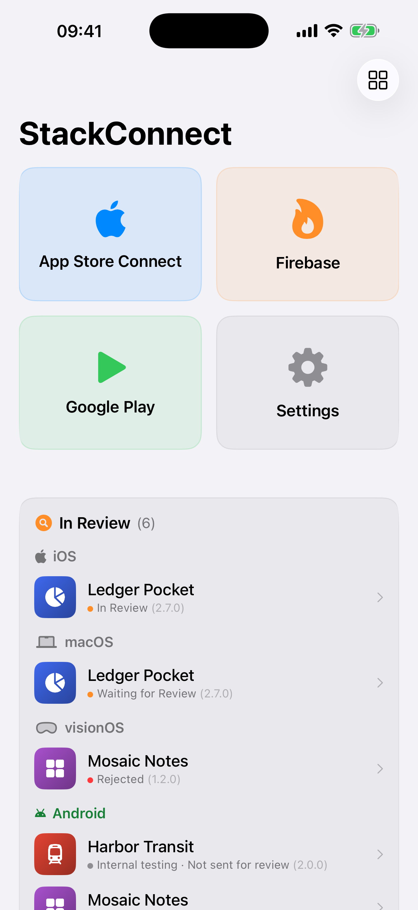
Home (top)
Home
HomeLarge title 'StackConnect', top-right grid button; 2x2 grid of service tiles (App Store Connect, Firebase, Google Play, Settings); below, 'In Review (6)' card grouping apps by platform (iOS, macOS, visionOS, Android) with app icon, name, status dot + version and chevron.
001-home-top.png
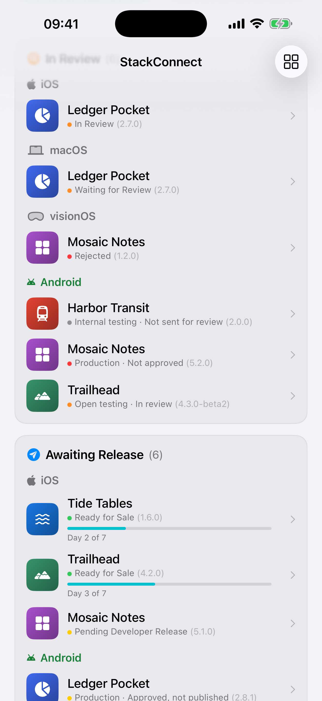
Home (In Review + Awaiting Release)
Home
HomeScrolled Home with inline nav title. 'In Review (6)' card fully visible (iOS/macOS/visionOS/Android groups) and 'Awaiting Release (6)' card: Tide Tables Ready for Sale 1.6.0 with phased-release progress bar 'Day 2 of 7', Trailhead 'Day 3 of 7', Mosaic Notes Pending Developer Release.
002-home-in-review-awaiting-release.png
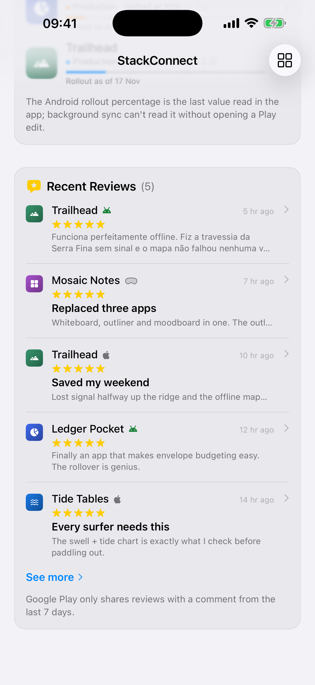
Home (Recent Reviews)
Home
HomeBottom of Home: end of Android rollout list with footnote, 'Recent Reviews (5)' card: rows with small app icon, app name + platform glyph, relative time, 5-star rating, optional bold title, 2-line body preview, chevron; 'See more' link and Google Play 7-day footnote.
003-home-recent-reviews.png
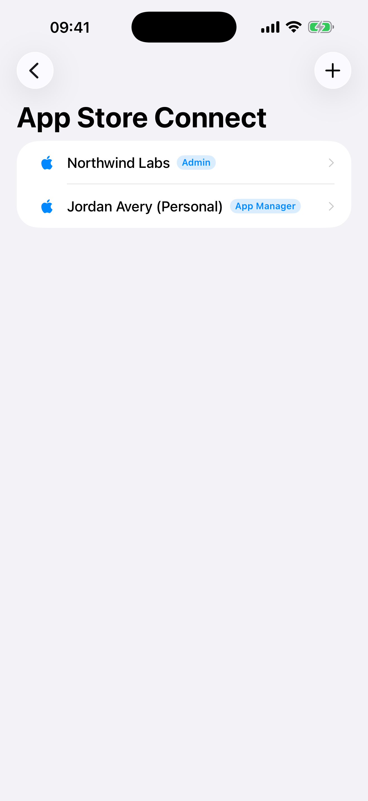
App Store Connect accounts
Home › App Store Connect
AccountsListLarge title, back button and '+' (add account) toolbar button; inset grouped list of ASC accounts with Apple glyph, account name and role capsule badge (Admin / App Manager), chevrons. Lots of empty space - candidate for sidebar column on iPad.
004-asc-account-list.png
Northwind Labs app list (syncing)
Home › App Store Connect › Northwind Labs
AppListTop segmented control Apps/Users, back button, gear (account settings). Large title account name, search field 'Search by name or bundle ID', inset list of apps: icon, name, one status line per platform (colored dot, state, version, platform glyph), favorite star, chevron. Floating 'Syncing apps...' toast (offline-first sync) and floating archive button bottom-right.
005-northwind-app-list-syncing.png

Northwind Labs app list
Home › App Store Connect › Northwind Labs
AppListSettled app list after sync: 5 apps (Orbit Focus macOS Prepare for Submission, Ledger Pocket iOS In Review + macOS Waiting for Review, Trailhead 'Phased release: 3 of 7 days', Mosaic Notes iOS Pending Developer Release + visionOS Rejected, Lumen tvOS Ready for Sale). Favorite star per row; floating archive (archived apps) button bottom-right. On iPad this list is the natural master column.
006-northwind-app-list.png
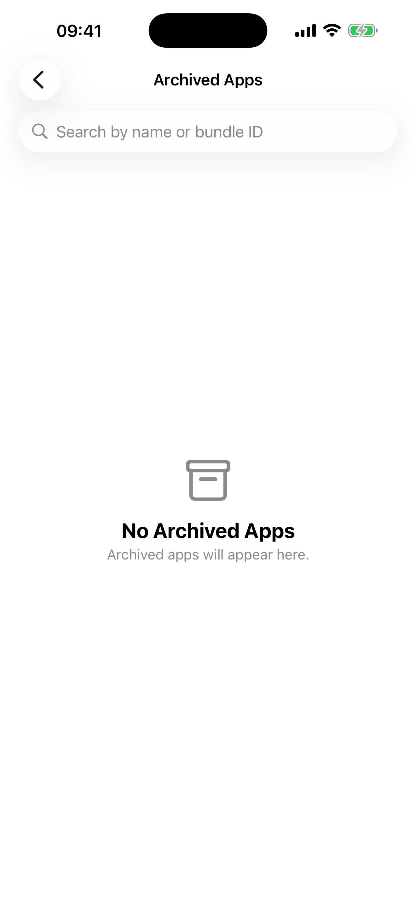
Archived Apps (empty)
Home › App Store Connect › Northwind Labs › Archived Apps
ArchivedAppsPushed screen with inline title 'Archived Apps', search field, centered empty state (archive box icon, 'No Archived Apps', subtitle). Fake data has no archived apps.
007-archived-apps-empty.png
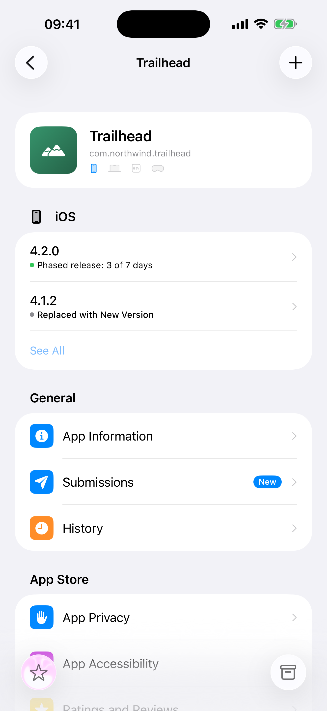
Trailhead app detail (top)
Home › App Store Connect › Northwind Labs › Trailhead
AppDetailInline title, back and '+' (new version) toolbar buttons. Header card: large icon, name, bundle ID, platform glyph row (iOS highlighted; macOS/tvOS/visionOS dimmed). 'iOS' section with version cards (4.2.0 Phased release 3 of 7 days; 4.1.2 Replaced with New Version) + 'See All'. 'General' section: App Information, Submissions (blue 'New' badge), History. 'App Store' section starts (App Privacy, App Accessibility...). Floating favorite star (bottom-left) and archive button (bottom-right).
008-trailhead-app-detail.png
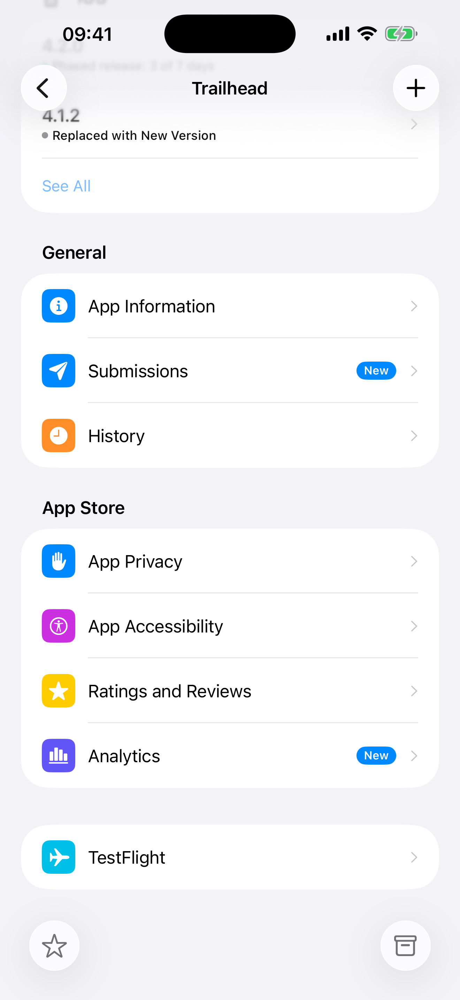
Trailhead app detail (scrolled)
Home › App Store Connect › Northwind Labs › Trailhead
AppDetailScrolled app detail: 'General' (App Information, Submissions 'New', History), 'App Store' (App Privacy, App Accessibility, Ratings and Reviews, Analytics 'New'), standalone TestFlight row. Rows use colored rounded-square SF Symbol icons. 'See All' link text renders in a pale/low-contrast blue. On iPad these grouped rows map to a sidebar or a dashboard grid.
009-trailhead-app-detail-2.png
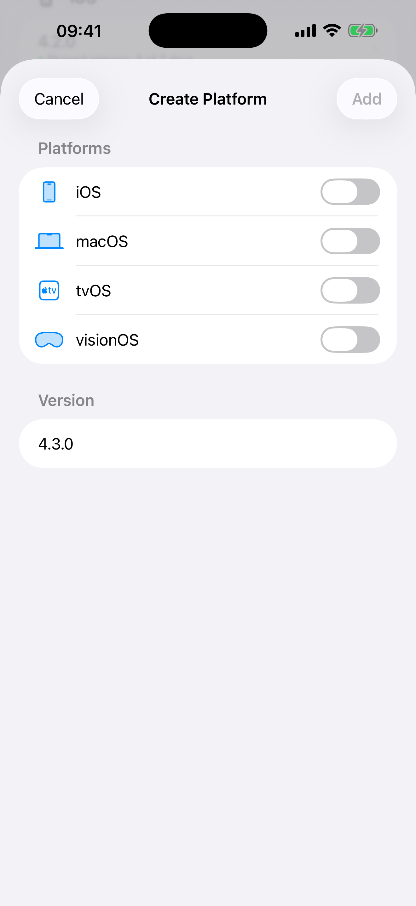
Create Platform / new version sheet
Home › App Store Connect › Northwind Labs › Trailhead › + (Create Platform)
AppDetailLarge modal sheet: Cancel / 'Create Platform' / Add (disabled until a platform is selected). 'Platforms' section with toggle rows (iOS, macOS, tvOS, visionOS, each with platform glyph) and 'Version' text field prefilled 4.3.0. On iPad: form sheet.
010-create-platform-sheet.png
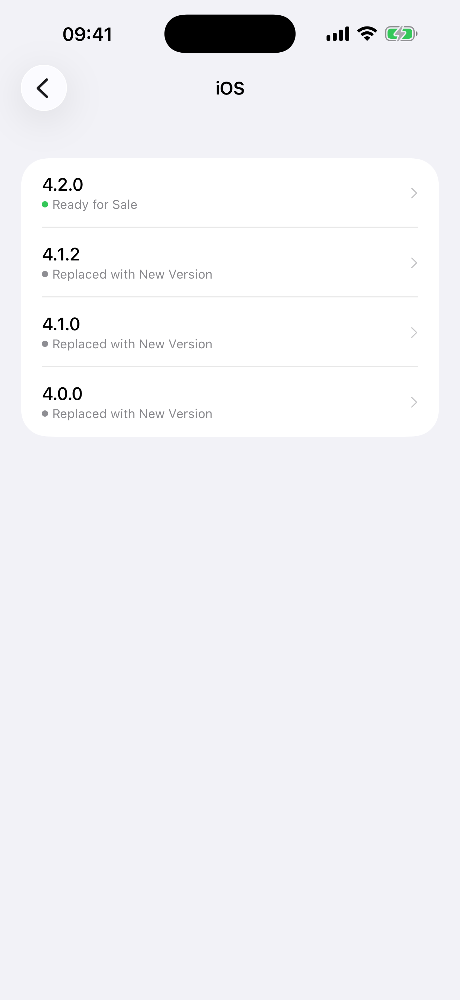
Trailhead iOS version list
Home › App Store Connect › Northwind Labs › Trailhead › iOS (See All)
VersionListInline title = platform name. Inset list of versions (4.2.0 Ready for Sale, 4.1.2/4.1.0/4.0.0 Replaced with New Version) each with status dot + chevron. 'Syncing versions...' toast appears briefly at load. Note: 4.2.0 shows 'Ready for Sale' here vs 'Phased release: 3 of 7 days' on app detail (different summarisation of same state).
011-trailhead-ios-version-list.png
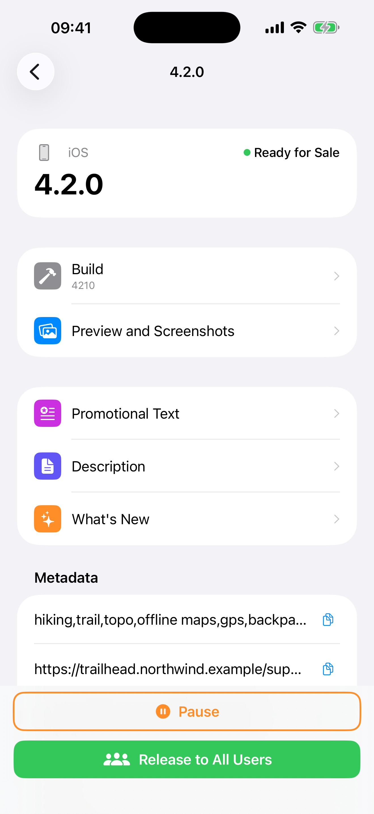
Trailhead 4.2.0 version detail (top)
Home › App Store Connect › Northwind Labs › Trailhead › iOS › 4.2.0
VersionDetailHeader card: platform glyph + 'iOS', status 'Ready for Sale' with green dot, big version number. Rows: Build 4210, Preview and Screenshots; Promotional Text, Description, What's New (pushed editors); 'Metadata' section with keywords and support URL rows with copy buttons. Sticky bottom action bar for phased release: outlined orange 'Pause' and filled green 'Release to All Users' (not tapped).
012-trailhead-version-420-detail.png
Trailhead 4.2.0 version detail (scrolled)
Home › App Store Connect › Northwind Labs › Trailhead › iOS › 4.2.0
VersionDetailMetadata list (keywords, support URL, marketing URL, version, copyright) each with copy button but no field labels; rows: App Review Information, App Store Version Release ('Automatically release this version'), Phased Release ('Phased release — Day 3 of 7'). Sticky Pause / Release to All Users buttons.
013-trailhead-version-420-detail-2.png
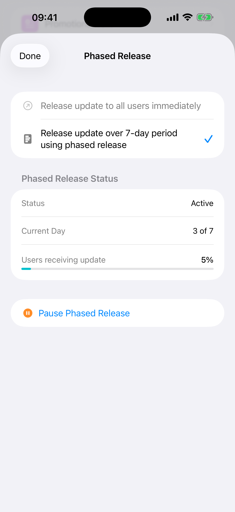
Phased Release sheet (active, day 3)
Home › App Store Connect › Northwind Labs › Trailhead › iOS › 4.2.0 › Phased Release
VersionDetailModal sheet with Done. Radio-style list: 'Release update to all users immediately' (disabled) vs 'Release update over 7-day period using phased release' (checked). 'Phased Release Status' section: Status Active, Current Day 3 of 7, Users receiving update 5% with progress bar. 'Pause Phased Release' action row (not tapped).
014-trailhead-phased-release-sheet.png
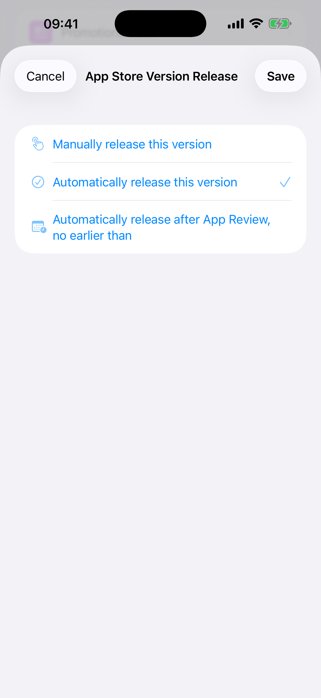
App Store Version Release sheet
Home › App Store Connect › Northwind Labs › Trailhead › iOS › 4.2.0 › App Store Version Release
VersionDetailSheet: Cancel / title / Save. Three release-mode options with icons (Manually release, Automatically release (checked), Automatically release after App Review no earlier than [date]). Options render as dimmed/disabled tint because version is already live, yet Save stays visually enabled (minor inconsistency).
015-trailhead-version-release-sheet.png
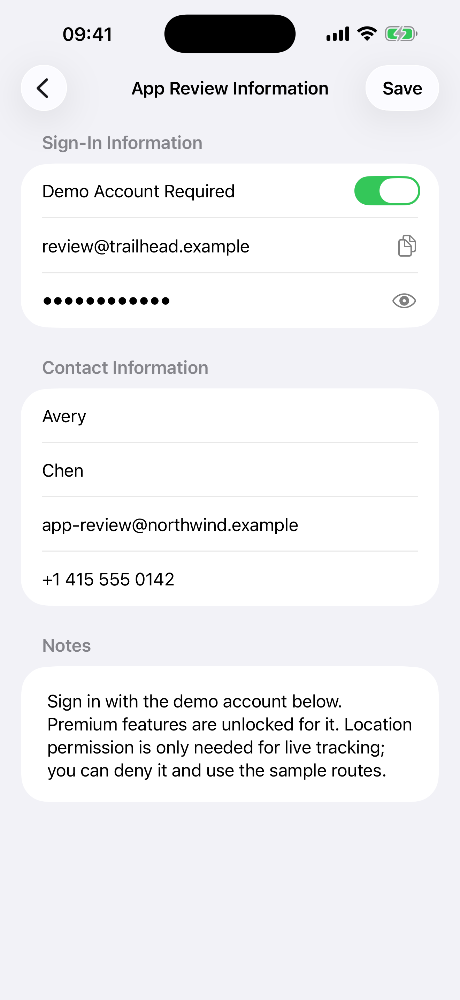
App Review Information form
Home › App Store Connect › Northwind Labs › Trailhead › iOS › 4.2.0 › App Review Information
AppReviewInfoPushed form with back + Save. Sections: Sign-In Information (Demo Account Required toggle, username with copy button, secure password with reveal eye), Contact Information (first name, last name, email, phone text fields without visible labels), Notes (multiline text editor). Good candidate for a two-column form on iPad.
016-trailhead-app-review-info.png
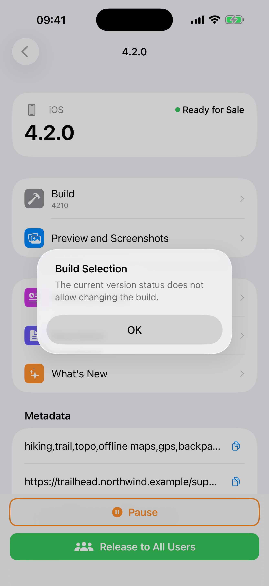
Build Selection locked alert
Home › App Store Connect › Northwind Labs › Trailhead › iOS › 4.2.0 › Build
VersionDetailInformational alert (expected, not a failure): 'Build Selection - The current version status does not allow changing the build.' with OK. Shown for live versions; editable build selection captured under Orbit Focus.
017-build-selection-locked-alert.png
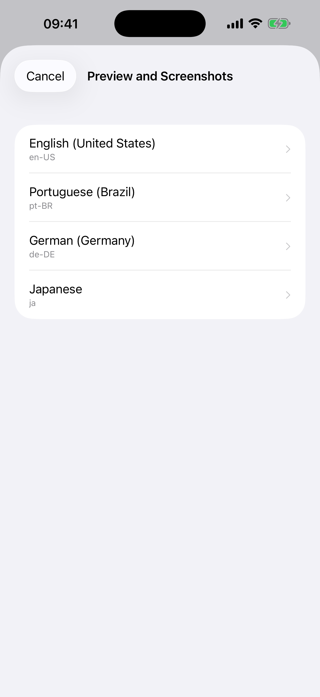
Preview and Screenshots - locale list
Home › App Store Connect › Northwind Labs › Trailhead › iOS › 4.2.0 › Preview and Screenshots
VersionDetailSheet with Cancel and title; list of localizations (English (United States) en-US, Portuguese (Brazil) pt-BR, German (Germany) de-DE, Japanese ja) with locale code subtitles and chevrons. On iPad: sidebar of locales + screenshot grid.
018-screenshots-locale-picker.png
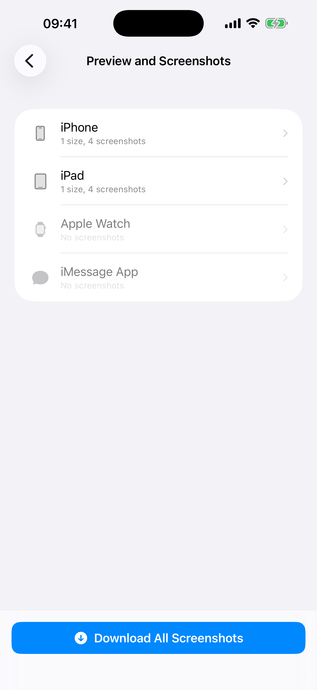
Preview and Screenshots - device families (en-US)
Home › App Store Connect › Northwind Labs › Trailhead › iOS › 4.2.0 › Preview and Screenshots › English (US)
VersionDetailPushed list of device families: iPhone and iPad ('1 size, 4 screenshots'), Apple Watch and iMessage App dimmed 'No screenshots'. Sticky blue 'Download All Screenshots' button at bottom (not tapped). Fixed: pluralization now reads '1 size' (was '1 sizes').
019-screenshots-device-families.png
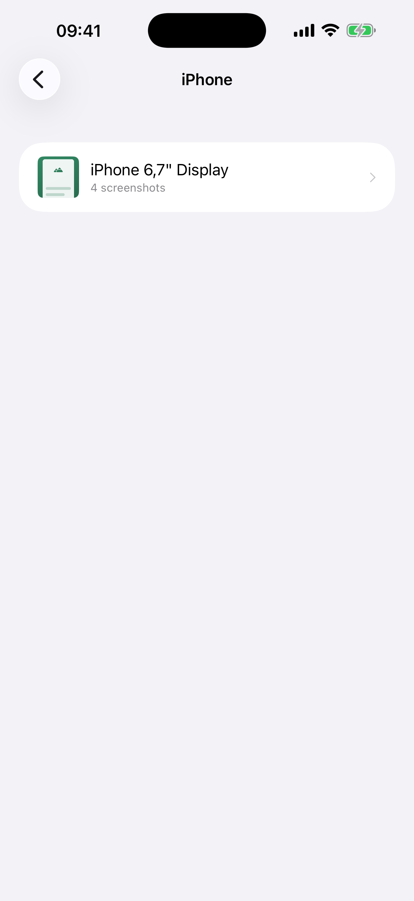
Screenshot display sizes (iPhone)
Home › App Store Connect › Northwind Labs › Trailhead › iOS › 4.2.0 › Preview and Screenshots › English (US) › iPhone
VersionDetailPushed list of screenshot display types: thumbnail + display name 'iPhone 6,7" Display' + '4 screenshots' + chevron. Fixed: human-readable display name instead of raw enum 'Iphone 67'. Minor: the size is formatted with the device locale decimal separator (simulator locale en_BR shows '6,7"'), whereas Apple always writes '6.7"'.
020-screenshots-iphone-sizes.png
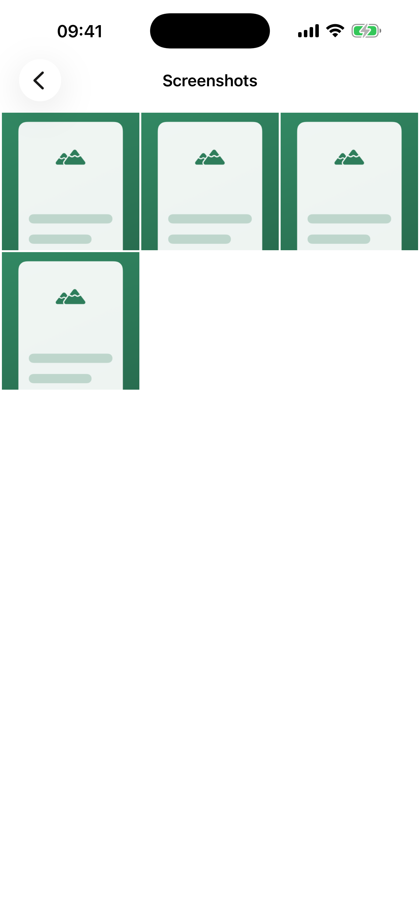
Screenshots grid
Home › App Store Connect › Northwind Labs › Trailhead › iOS › 4.2.0 › Preview and Screenshots › English (US) › iPhone › Iphone 67
VersionDetailEdge-to-edge 3-column grid of screenshot thumbnails (fake placeholder art) on white background. Portrait screenshots are cropped to squares (top/bottom cut). On iPad: adaptive grid with more columns and true aspect ratio.
021-screenshots-grid.png
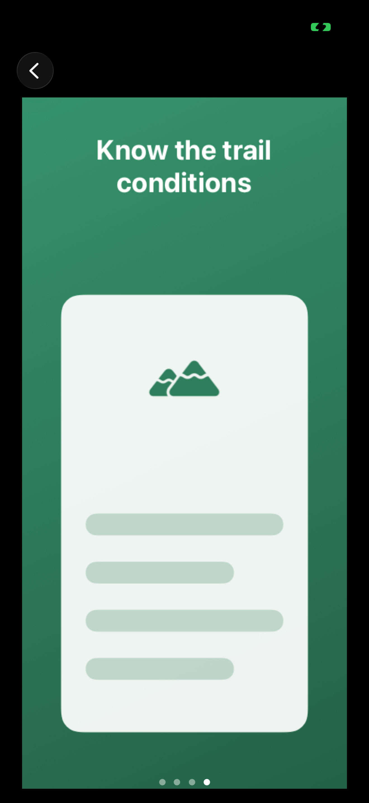
Screenshot preview (full screen)
Home › App Store Connect › Northwind Labs › Trailhead › iOS › 4.2.0 › Preview and Screenshots › English (US) › iPhone › Iphone 67 › Screenshot 4
ScreenshotPreviewFull-screen black pager showing one screenshot at true aspect ratio, page dots (4) at bottom, dark circular back button. Status bar time/signal are dark-on-black and invisible (status bar style not switched to light).
022-screenshot-preview.png
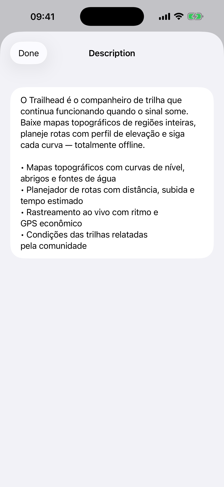
Description (pt-BR, read-only)
Home › App Store Connect › Northwind Labs › Trailhead › iOS › 4.2.0 › Description › Portuguese (Brazil)
VersionDetailSheet with Done; selected after the same locale list sheet as Preview and Screenshots (Cancel + en-US/pt-BR/de-DE/ja). Shows the localized description as read-only text in a rounded card (version is live). Promotional Text and What's New use the same locale-list → text card flow.
023-description-pt-br-readonly.png
Promotional Text - locale list
Home › App Store Connect › Northwind Labs › Trailhead › iOS › 4.2.0 › Promotional Text
VersionDetailSheet with Cancel and title; locale list (language name + locale code) used as the first step of every localized text field (Promotional Text, Description, What's New, Screenshots).
024-promotional-text-locales.png
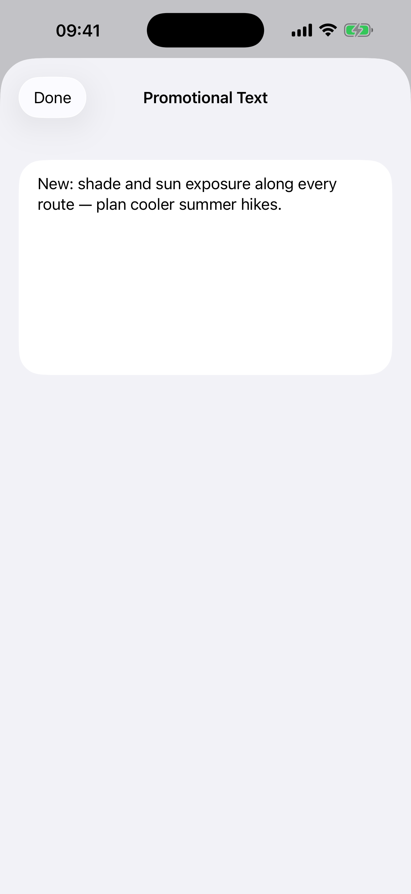
Promotional Text (en-US)
Home › App Store Connect › Northwind Labs › Trailhead › iOS › 4.2.0 › Promotional Text › English (US)
VersionDetailSheet with Done; fixed-height multiline text card with the promotional text. No character counter (170 limit) shown.
025-promotional-text-en-us.png
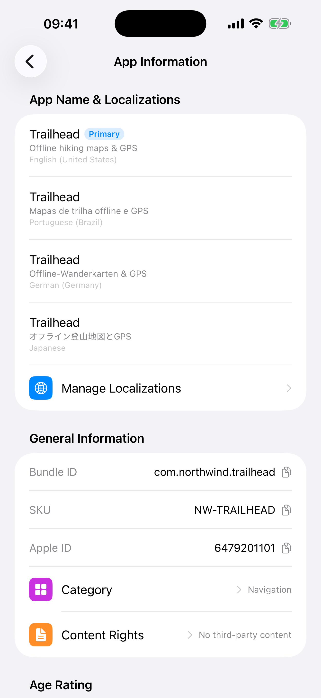
App Information (top)
Home › App Store Connect › Northwind Labs › Trailhead › App Information
AppInformationPushed screen. 'App Name & Localizations' list: name + 'Primary' capsule, subtitle, locale name per row (4 locales) + Manage Localizations row. 'General Information': key/value rows Bundle ID, SKU, Apple ID with copy buttons; Category (Navigation) and Content Rights (No third-party content) rows - the chevron is still drawn BEFORE the trailing value instead of after it (layout quirk). 'Age Rating' section header below. Recaptured after category-name fix (Navigation displays correctly).
026-trailhead-app-information.png
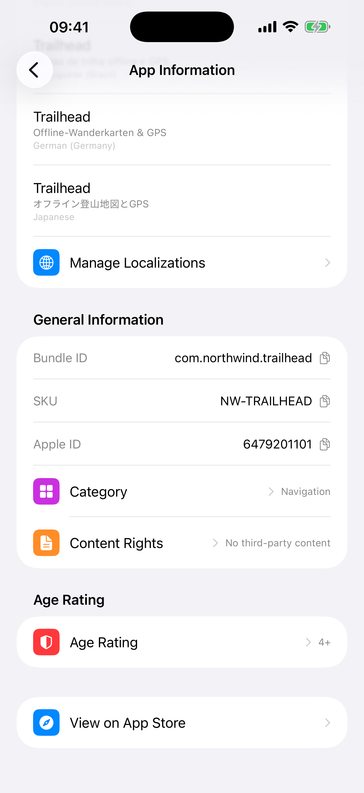
App Information (scrolled)
Home › App Store Connect › Northwind Labs › Trailhead › App Information
AppInformationLower half: General Information rows (Category 'Navigation', Content Rights - chevron still before value), 'Age Rating' section (Age Rating row, value 4+), standalone 'View on App Store' row (opens external link; not tapped). Recaptured after category-name fix.
027-trailhead-app-information-2.png
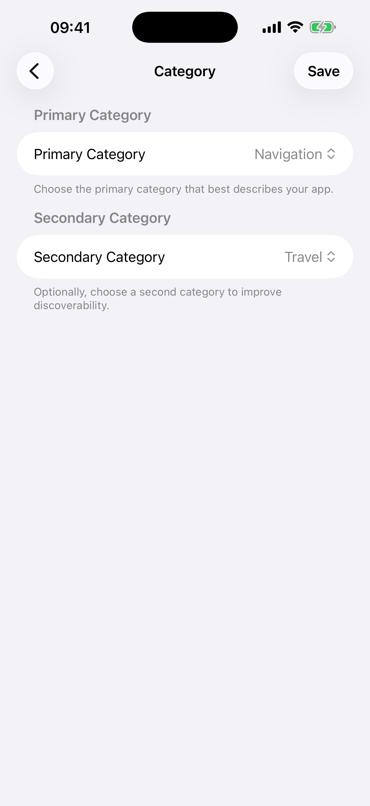
Category picker
Home › App Store Connect › Northwind Labs › Trailhead › App Information › Category
AppCategoryPickerPushed form with back + Save. Two sections, each a menu-style Picker row (Primary Category: Navigation; Secondary Category: Travel) with footer help text. Section header duplicates the row label. Recaptured after category-name fix; selections render correctly.
028-category-picker.png
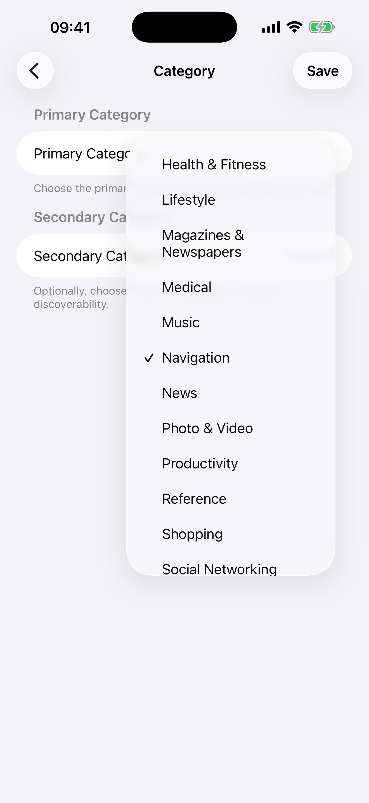
Category picker - primary menu open
Home › App Store Connect › Northwind Labs › Trailhead › App Information › Category › Primary Category menu
AppCategoryPickerScrollable popup menu of categories with checkmark on Navigation (dismissed without selecting): Health & Fitness, Lifestyle, Magazines & Newspapers, Medical, Music, Navigation, News, Photo & Video, Productivity, Reference, Shopping, Social Networking. Fixed: App Store category names with '&' instead of title-cased API IDs ('Health And Fitness', 'Photo And Video').
029-category-picker-menu.png
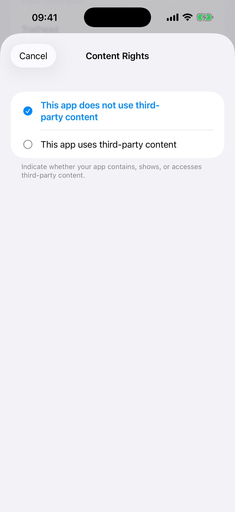
Content Rights sheet
Home › App Store Connect › Northwind Labs › Trailhead › App Information › Content Rights
AppInformationSheet with Cancel only (selection likely saves immediately). Two radio options with filled-check selected state ('This app does not use third-party content' selected) and footer explanation.
030-content-rights-sheet.png
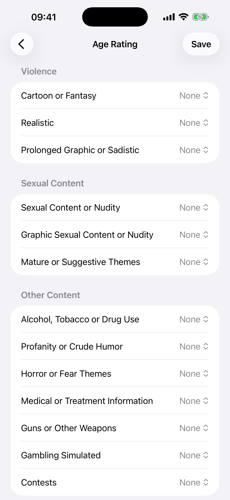
Age Rating form (top)
Home › App Store Connect › Northwind Labs › Trailhead › App Information › Age Rating
AgeRatingLong pushed form with back + Save. Sections Violence, Sexual Content, Other Content; each row a menu Picker with frequency value (None / Infrequent / Frequent). Dense label/value form - two columns on iPad.
031-age-rating.png
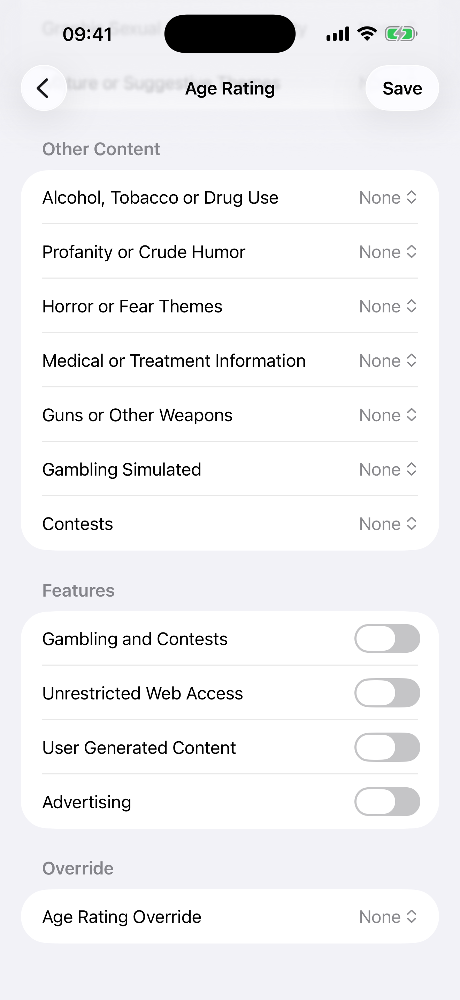
Age Rating form (bottom)
Home › App Store Connect › Northwind Labs › Trailhead › App Information › Age Rating
AgeRatingLower part: Other Content pickers, 'Features' section with toggles (Gambling and Contests, Unrestricted Web Access, User Generated Content, Advertising), 'Override' section with Age Rating Override picker.
032-age-rating-2.png
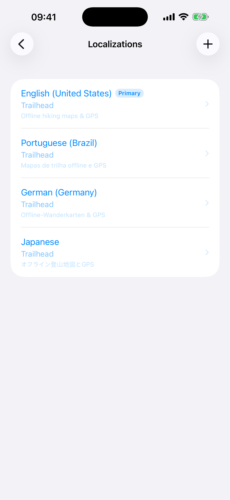
Manage Localizations
Home › App Store Connect › Northwind Labs › Trailhead › App Information › Manage Localizations
ManageLocalizationsPushed list titled 'Localizations' with back and '+' (add localization). Rows: language (+ 'Primary' capsule), app name, subtitle. Entire row text is rendered in accent-blue (Button-style row) with very pale subtitle - low contrast vs other lists in the app.
033-manage-localizations.png
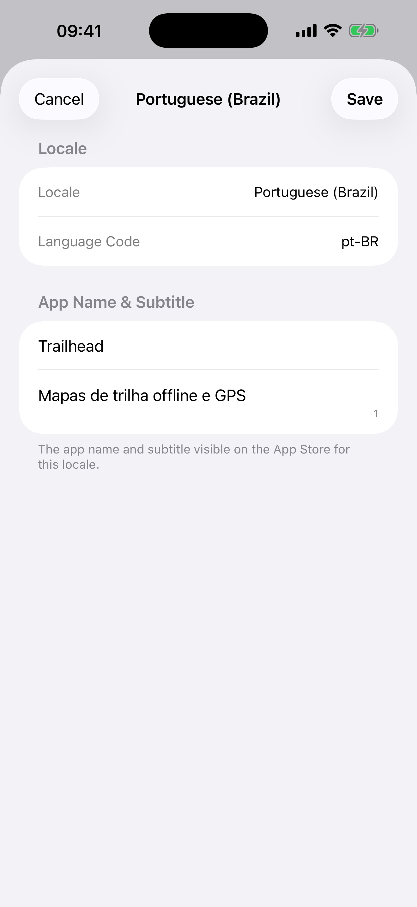
Edit localization sheet (pt-BR)
Home › App Store Connect › Northwind Labs › Trailhead › App Information › Manage Localizations › Portuguese (Brazil)
ManageLocalizationsSheet: Cancel / locale name / Save. 'Locale' section read-only key-value rows (Locale, Language Code); 'App Name & Subtitle' text fields with remaining-character counter ('1') under subtitle and footer help text. Cancelled.
034-localization-edit-sheet.png
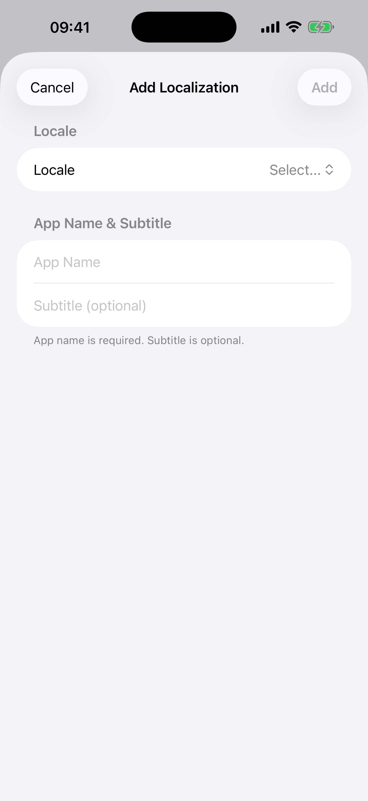
Add Localization sheet
Home › App Store Connect › Northwind Labs › Trailhead › App Information › Manage Localizations › +
ManageLocalizationsSheet: Cancel / 'Add Localization' / Add (disabled). Locale menu picker ('Select...'), App Name and Subtitle (optional) text fields with placeholder, footer 'App name is required. Subtitle is optional.' Cancelled.
035-add-localization-sheet.png
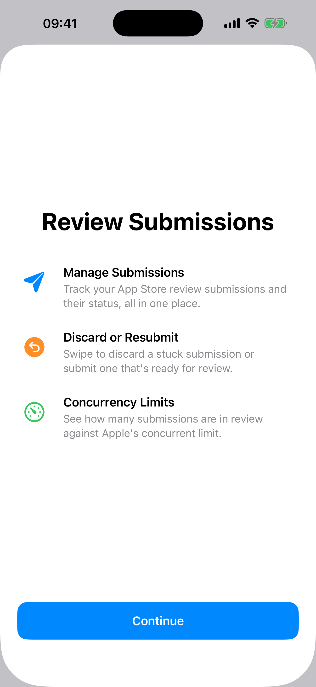
Review Submissions feature intro
Home › App Store Connect › Northwind Labs › Trailhead › Submissions (first open)
SubmissionsOne-time 'what's new' sheet (Apple-style welcome): large title 'Review Submissions', three feature rows with colored SF Symbols (Manage Submissions, Discard or Resubmit, Concurrency Limits) and full-width blue Continue button. On iPad: centered form sheet.
036-submissions-whats-new.png
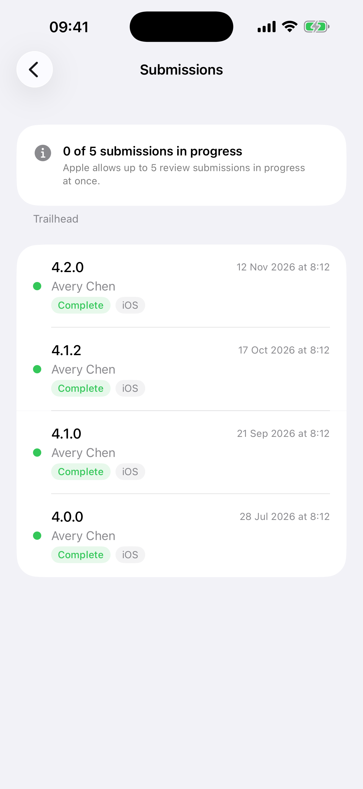
Submissions list
Home › App Store Connect › Northwind Labs › Trailhead › Submissions
SubmissionsPushed screen. Info card '0 of 5 submissions in progress' (concurrency limit) + section header 'Trailhead'; list rows: status dot, version, submitter name, capsule chips (Complete in green, platform iOS in gray), timestamp top-right ('12 Nov 2026 at 8:12', '17 Oct 2026 at 8:12', ...). One separator (between 4.1.2 and 4.1.0) still spans full width while others are inset. Fixed: timestamps now use locale date with day, month and year.
037-submissions-list.png
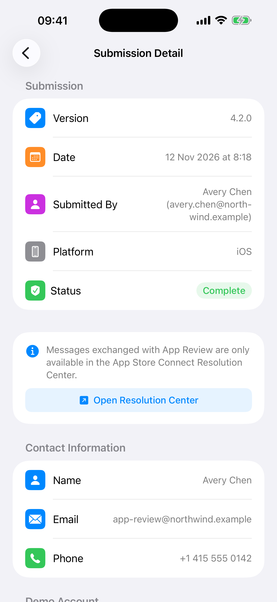
Submission detail
Home › App Store Connect › Northwind Labs › Trailhead › Submissions › 4.2.0
SubmissionsFixed: Date row now reads "12 Nov 2026 at 8:18" (locale date + time). Grouped list: Version, Date, Submitted By (multi-line), Platform, Status pill; info card with "Open Resolution Center"; Contact Information and Demo Account sections below.
038-submission-detail.png
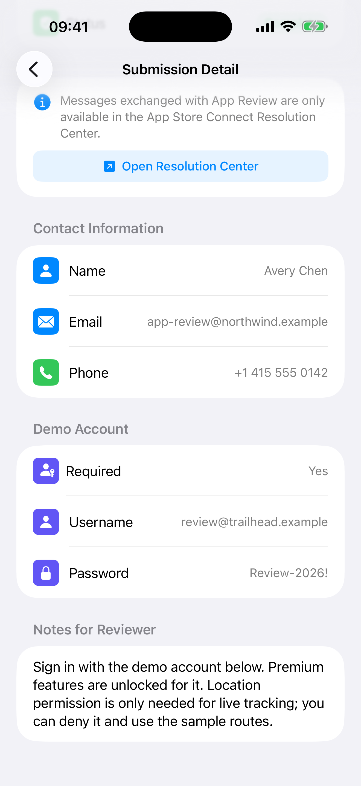
Submission detail (scrolled)
Home › App Store Connect › Northwind Labs › Trailhead › Submissions › 4.2.0
SubmissionsLower part: Contact Information, Demo Account (Required Yes, Username, Password shown in plain text - unlike App Review Information where it is masked), Notes for Reviewer text card.
039-submission-detail-2.png
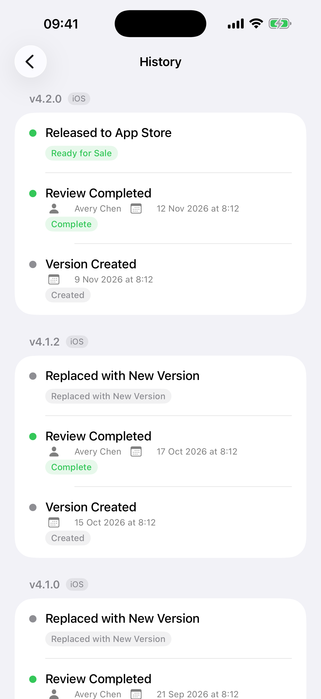
App History timeline
Home › App Store Connect › Northwind Labs › Trailhead › History
AppHistoryPushed screen grouped by version (section header 'v4.2.0' + platform chip). Each card is a vertical event list: status dot, event title, actor + calendar icon + date, status capsule. Order is now logical: current state first without a date ('Released to App Store' / 'Ready for Sale'; 'Replaced with New Version' for 4.1.2/4.1.0), then dated events newest first ('Review Completed' 12 Nov 2026, 'Version Created' 9 Nov 2026). Fixed: timeline order and locale date with day/month/year. Minor: the separator above 'Version Created' is inset further than the one above 'Review Completed'. Good fit for a wide timeline on iPad.
040-app-history.png
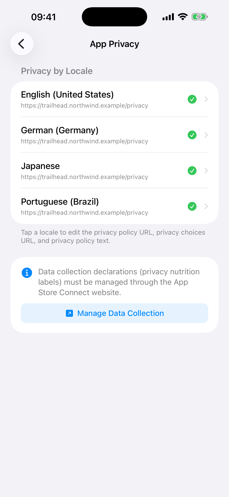
App Privacy
Home › App Store Connect › Northwind Labs › Trailhead › App Privacy
AppPrivacyPushed screen. 'Privacy by Locale' list: locale name, privacy policy URL subtitle, green check status, chevron; footer help. Info card explaining privacy nutrition labels must be managed on the website + tinted 'Manage Data Collection' external-link button. Locale order here (en, de, ja, pt) differs from other screens (en, pt, de, ja).
041-app-privacy.png
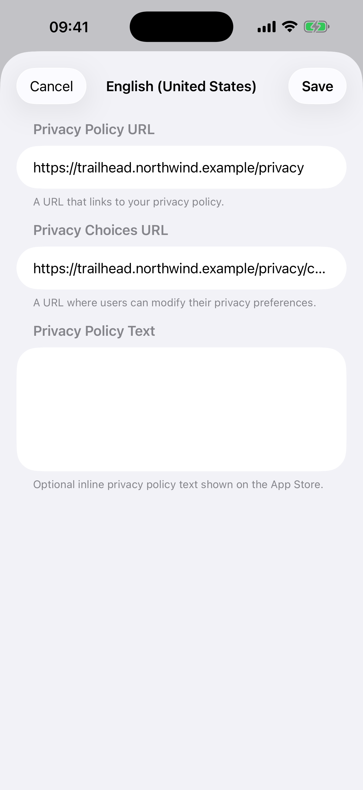
App Privacy locale edit sheet
Home › App Store Connect › Northwind Labs › Trailhead › App Privacy › English (US)
AppPrivacySheet: Cancel / locale / Save. Form sections Privacy Policy URL, Privacy Choices URL (single-line fields, truncated), Privacy Policy Text (empty multiline editor), each with footer help. Cancelled.
042-app-privacy-locale-edit.png
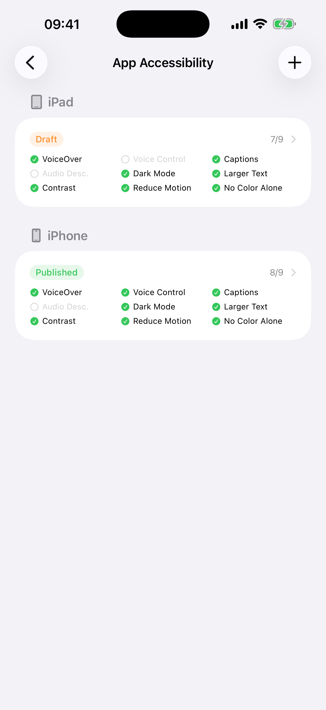
App Accessibility
Home › App Store Connect › Northwind Labs › Trailhead › App Accessibility
AppAccessibilityPushed screen with '+' (add device declaration). Per-device sections (iPad, iPhone) each with a card: state capsule (Draft orange / Published green), count '7/9' + chevron, 3-column grid of 9 accessibility features with check / empty circle (VoiceOver, Voice Control, Captions, Audio Desc., Dark Mode, Larger Text, Contrast, Reduce Motion, No Color Alone).
043-app-accessibility.png
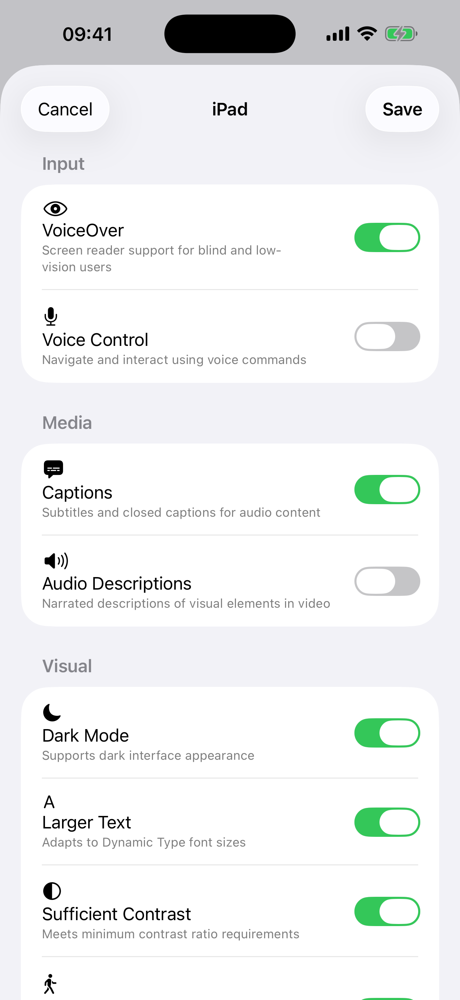
Accessibility declaration edit (iPad)
Home › App Store Connect › Northwind Labs › Trailhead › App Accessibility › iPad
AppAccessibilitySheet: Cancel / iPad / Save. Sections Input, Media, Visual (continues) with toggle rows: title + description; the SF Symbol sits on its own line ABOVE the title instead of leading the row, wasting vertical space (layout quirk). Cancelled.
044-accessibility-device-edit.png
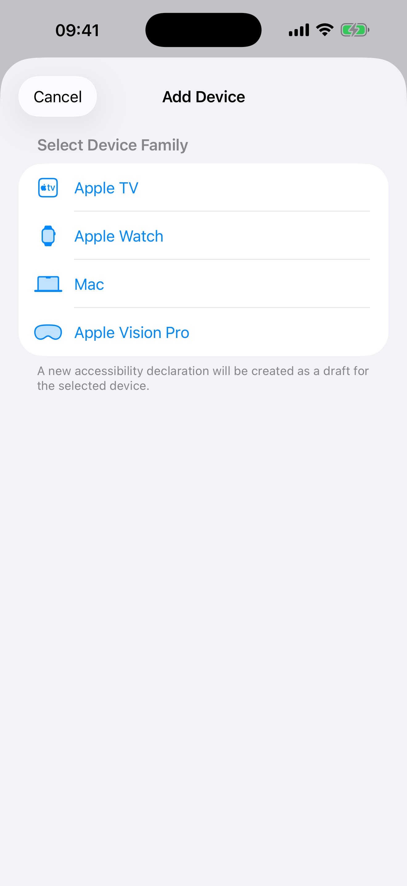
Accessibility - Add Device sheet
Home › App Store Connect › Northwind Labs › Trailhead › App Accessibility › +
AppAccessibilitySheet: Cancel / 'Add Device'. 'Select Device Family' list of tappable rows (Apple TV, Apple Watch, Mac, Apple Vision Pro) with blue glyphs; footer says a draft declaration will be created. Cancelled without selecting.
045-accessibility-add-device.png
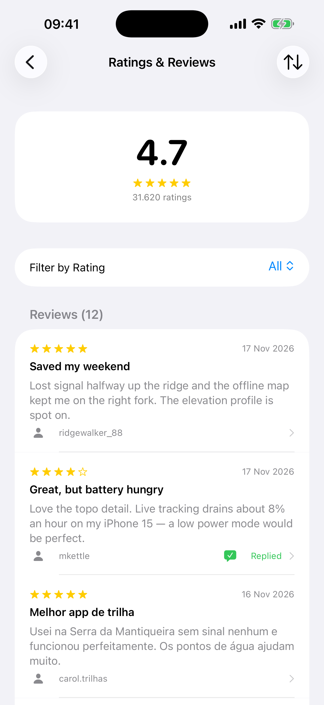
Ratings & Reviews
Home › App Store Connect › Northwind Labs › Trailhead › Ratings and Reviews
RatingsReviewsPushed screen with sort toolbar button (up/down arrows). Summary card: big average 4.7, stars, '31.620 ratings' (region-formatted). 'Filter by Rating' menu picker (All). 'Reviews (12)' list: stars, date, bold title, body, reviewer handle, 'Replied' green badge when answered, chevron. On iPad: summary + filters in a side column, reviews in a wider list/detail.
046-ratings-reviews.png
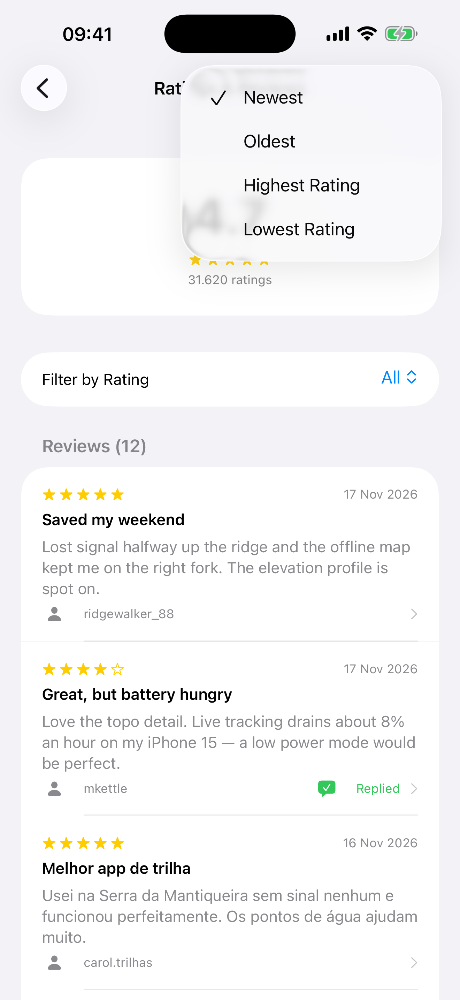
Ratings & Reviews - sort menu
Home › App Store Connect › Northwind Labs › Trailhead › Ratings and Reviews › Sort
RatingsReviewsToolbar pull-down menu: Newest (checked), Oldest, Highest Rating, Lowest Rating.
047-ratings-sort-menu.png
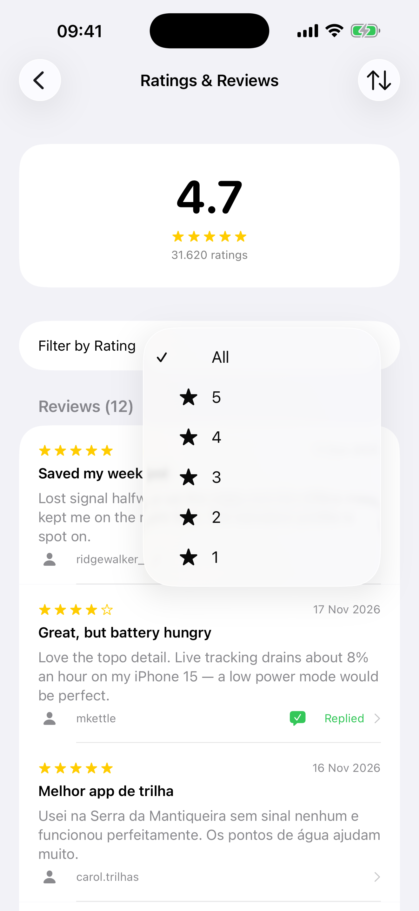
Ratings & Reviews - filter menu
Home › App Store Connect › Northwind Labs › Trailhead › Ratings and Reviews › Filter by Rating
RatingsReviewsPicker menu: All (checked), 5, 4, 3, 2, 1 each with a star glyph.
048-ratings-filter-menu.png
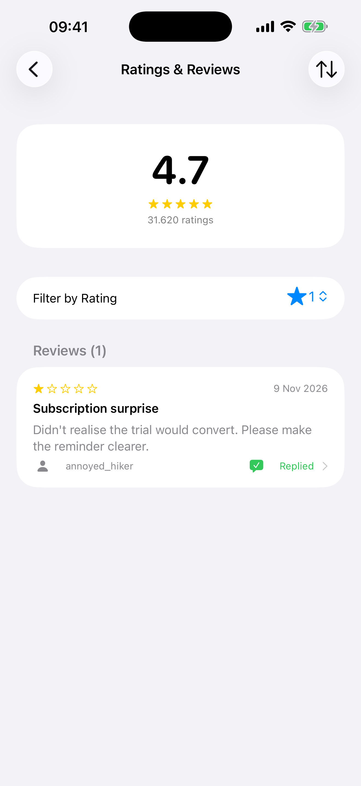
Ratings & Reviews - filtered to 1 star
Home › App Store Connect › Northwind Labs › Trailhead › Ratings and Reviews (filter: 1 star)
RatingsReviewsFiltered state: picker label shows an oversized blue filled star + '1'; 'Reviews (1)' with a single 1-star review marked Replied.
049-ratings-filtered-1-star.png
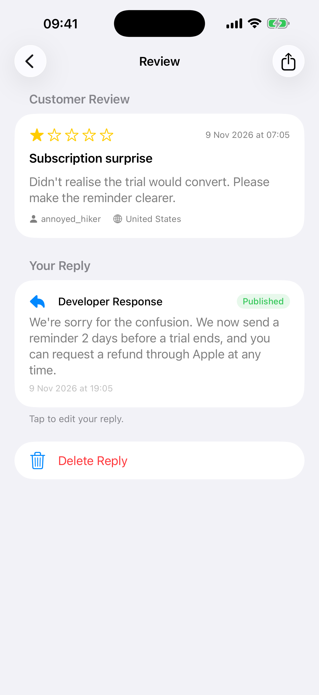
Review detail (with reply)
Home › App Store Connect › Northwind Labs › Trailhead › Ratings and Reviews › Review
RatingsReviewsPushed detail with share toolbar button. 'Customer Review' card: stars, date+time, title, body, reviewer + territory (globe). 'Your Reply' card: reply icon, 'Developer Response', 'Published' capsule, reply text, timestamp; footer 'Tap to edit your reply.'; destructive 'Delete Reply' row (trash icon is tinted blue while label is red - inconsistent).
050-review-detail-replied.png
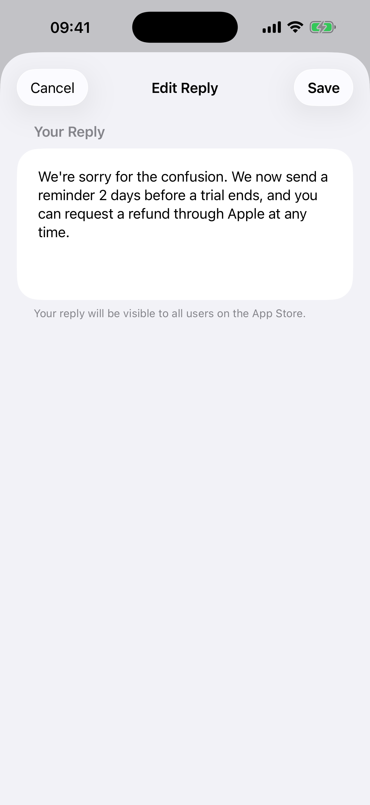
Edit Reply sheet
Home › App Store Connect › Northwind Labs › Trailhead › Ratings and Reviews › Review › Edit Reply
RatingsReviewsSheet: Cancel / 'Edit Reply' / Save. Multiline text editor prefilled with the published response, footer 'Your reply will be visible to all users on the App Store.' No template picker or character counter here. Cancelled.
051-edit-reply-sheet.png
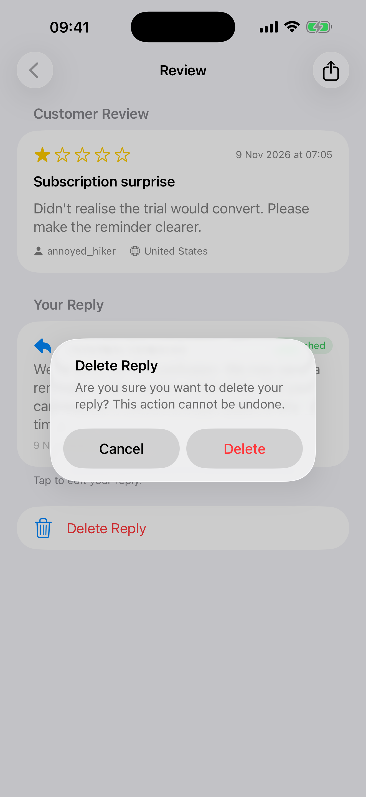
Delete Reply confirmation
Home › App Store Connect › Northwind Labs › Trailhead › Ratings and Reviews › Review › Delete Reply
RatingsReviewsDestructive confirmation alert: 'Delete Reply - Are you sure... cannot be undone.' Cancel / red Delete. Cancelled (not confirmed).
052-delete-reply-confirm.png
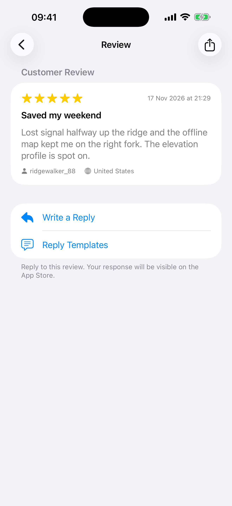
Review detail (no reply yet)
Home › App Store Connect › Northwind Labs › Trailhead › Ratings and Reviews › Review
RatingsReviewsCustomer Review card plus action list: 'Write a Reply' and 'Reply Templates' (blue rows with icons) and footer that the response will be public.
053-review-detail-unreplied.png
Reply to Review sheet
Home › App Store Connect › Northwind Labs › Trailhead › Ratings and Reviews › Review › Write a Reply
RatingsReviewsSheet: Cancel / 'Reply to Review' / Send (disabled while empty). Empty multiline editor with public-visibility footer. Cancelled without typing.
054-reply-to-review-sheet.png
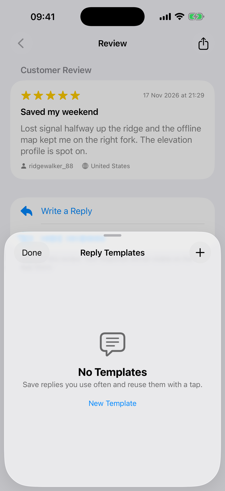
Reply Templates (empty)
Home › App Store Connect › Northwind Labs › Trailhead › Ratings and Reviews › Review › Reply Templates
ReplyTemplatesMedium-detent sheet with grabber: Done / 'Reply Templates' / '+'. Empty state: chat bubble icon, 'No Templates', explanation, 'New Template' link. No templates are seeded in fake data.
055-reply-templates-empty.png
New Reply Template sheet
Home › App Store Connect › Northwind Labs › Trailhead › Ratings and Reviews › Review › Reply Templates › +
ReplyTemplatesStacked sheet: Cancel / 'New Template' / Save (disabled). Name text field (private label) and Message multiline editor with footers. Cancelled.
056-new-reply-template.png
Ratings & Reviews (end of list)
Home › App Store Connect › Northwind Labs › Trailhead › Ratings and Reviews
RatingsReviewsEnd of the 12-review list: multilingual reviews (Japanese, Spanish, French), mix of Replied badges; no pagination/'load more' control at the end.
057-ratings-reviews-2.png
Analytics Reports feature intro
Home › App Store Connect › Northwind Labs › Trailhead › Analytics (first open)
AnalyticsDashboardOne-time welcome sheet: 'Analytics Reports' with three feature rows (App Store Connect Reports, Download & Keep, Available Offline) and blue Continue button.
058-analytics-whats-new.png
Analytics dashboard (categories)
Home › App Store Connect › Northwind Labs › Trailhead › Analytics
AnalyticsDashboardPushed screen. Favorites empty state ('No favorite reports yet', swipe-to-favorite hint). Category sections (App Store Engagement: Discovery and Engagement, Web Preview, Retention Messaging; App Store Commerce: Downloads, Pre-Orders, Purchases, Subscription State...) as two-line rows with descriptions and chevrons. No charts on this level - on iPad a sidebar of categories + report content.
059-analytics-dashboard.png
Analytics dashboard (Frameworks section)
Home › App Store Connect › Northwind Labs › Trailhead › Analytics
AnalyticsDashboardLong categorized list continues: App Usage (… CarPlay App Usage) and 'Frameworks' section (Photos Picker, Photos Library Access, Home Screen Widgets, Live Activities, Notification Summary, CarPlay Navigation, Core Location Authorization, ARKit World Tracking …).
060-analytics-dashboard-2.png
Analytics report - Downloads (daily)
Home › App Store Connect › Northwind Labs › Trailhead › Analytics › Downloads
AnalyticsReportDetailPushed report screen with folder toolbar button (report files). Card with Daily/Weekly/Monthly segmented control and Swift Charts bar chart (y-axis gridlines right), 'Daily data' table (Date / Number). Fake data has a single day, so the chart is one full-width bar. Date formatted 'Nov 17, 2026' here vs '17 Nov 2026' on reviews (inconsistent formatters).
061-analytics-report-downloads-daily.png
Analytics report - Downloads (monthly)
Home › App Store Connect › Northwind Labs › Trailhead › Analytics › Downloads (Monthly)
AnalyticsReportDetailMonthly segment selected: single bar 356.220 for 'November, 2026' (comma in month-year label is unusual).
062-analytics-report-downloads-monthly.png
Analytics report files
Home › App Store Connect › Northwind Labs › Trailhead › Analytics › Downloads › Files
AnalyticsReportFilesPushed list of downloaded report files grouped by granularity (Daily, Monthly): file name, download date · size. 'Select' toolbar button for multi-select (export/delete). Rows have no chevron/affordance.
063-analytics-report-files.png
Analytics report files - select mode
Home › App Store Connect › Northwind Labs › Trailhead › Analytics › Downloads › Files › Select
AnalyticsReportFilesEdit mode: selection circles on each row, Done button, bottom toolbar with Delete and Share (disabled until selection). Exited with Done, nothing deleted.
064-analytics-report-files-select.png
Analytics report - Discovery and Engagement (weekly)
Home › App Store Connect › Northwind Labs › Trailhead › Analytics › Discovery and Engagement (Weekly)
AnalyticsReportDetailSame report template: segmented Daily/Weekly/Monthly, bar chart and data table. Fake data has one data point per granularity, so no trend line/multi-bar chart can be shown. Long title fits inline. On iPad: chart can be wider with table alongside.
065-analytics-report-discovery-weekly.png
Analytics report row swipe actions
Home › App Store Connect › Northwind Labs › Trailhead › Analytics (swipe on Web Preview)
AnalyticsReportsTrailing swipe actions on a report row: Hide (gray, eye-slash) and Favorite (yellow star). Not tapped. On iPad these should also be available via context menu.
066-analytics-swipe-actions.png
TestFlight overview
Home › App Store Connect › Northwind Labs › Trailhead › TestFlight
TestFlightPushed screen with '+' (new beta group). Sections: Internal Testing (Northwind QA, tester count), External Testing (Press & Partners; Trail Scouts with 'Public Link' badge), per-platform 'iOS' builds list: status icon (Processing spinner orange / Ready green), 'version(build)' title, upload date, status capsule, chevron; 'See More' row. Version/build has no space before the parenthesis ('4.3.0(4303)'). Natural iPad split: groups sidebar + builds.
067-testflight.png
New Beta Group sheet
Home › App Store Connect › Northwind Labs › Trailhead › TestFlight › +
TestFlightSheet: Cancel / 'New Beta Group' / Create (disabled). Group Name field, Internal Group toggle with footer explaining external testers / Beta App Review. Cancelled.
068-new-beta-group-sheet.png
Beta group detail (external, Trail Scouts)
Home › App Store Connect › Northwind Labs › Trailhead › TestFlight › Trail Scouts
TestFlightPushed group detail. 'Group Info' rows with blue icons: Type External, Public Link Enabled (green) + URL row with share icon, Feedback Enabled, Created date, 'Edit Group Settings' action. 'Test Information' row (Beta App Review info), 'Testers 10' row, per-platform builds section (4.3.0(4301) 'Testing' capsule) and 'Add Build' action.
069-beta-group-external.png

Edit Beta Group sheet
Home › App Store Connect › Northwind Labs › Trailhead › TestFlight › Trail Scouts › Edit Group Settings
TestFlightSheet: Cancel / 'Edit Group' / Save. Name field, Feedback Enabled toggle, Public Link section (toggle + empty Tester Limit numeric field) and footer. Cancelled.
070-edit-beta-group-sheet.png
Test Information (Beta App Review info)
Home › App Store Connect › Northwind Labs › Trailhead › TestFlight › Trail Scouts › Test Information
TestFlightPushed form with Save toolbar button. Sections: Beta App Description (multiline text) + feedback email; Contact Information (first name, last name, phone, email) with footer about international phone format; Sign-In Information (Sign-In Required toggle, username with copy button, masked password with reveal eye). Filled fields have no visible labels once populated (placeholders only) - on iPad use labeled two-column form rows. Not saved.
071-testflight-test-information.png
Beta group testers list
Home › App Store Connect › Northwind Labs › Trailhead › TestFlight › Trail Scouts › Testers
TestFlightPushed list with '+' toolbar and search field 'Search testers'. Section header 'Trail Scouts' with count 10. Rows: status icon (green check Installed, blue person Accepted, yellow envelope Invited), name, email, colored status capsule. Rows are not tappable. Minor: Invited rows' text is indented a few points more than other rows (envelope icon wider). iPad: table with columns (name, email, status, invite date).
072-beta-group-testers.png
Add Tester sheet
Home › App Store Connect › Northwind Labs › Trailhead › TestFlight › Trail Scouts › Testers › +
TestFlightSheet: Cancel / 'Add Tester' / Invite (disabled until email). Email (required) field, Name (optional) First/Last fields, 'Import CSV' action with footer describing CSV column order. Cancelled, nothing invited.
073-add-tester-sheet.png
Tester row swipe action
Home › App Store Connect › Northwind Labs › Trailhead › TestFlight › Trail Scouts › Testers (swipe on Maya Lindqvist)
TestFlightTrailing swipe reveals red 'Remove' action (person-minus icon). Not tapped; swiped closed, tester count still 10. iPad: also expose via context menu / multi-select toolbar.
074-tester-swipe-remove.png
Add Build sheet (available builds)
Home › App Store Connect › Northwind Labs › Trailhead › TestFlight › Trail Scouts › Add Build
TestFlightSheet: Cancel / 'Add Build'. iOS section listing builds not yet in the group: version(build) in blue, upload date, green 'Ready' capsule (4.3.0(4302) … 4.0.0(4000)). Tap selects/adds immediately (no confirm) - not tapped; cancelled.
075-add-build-sheet.png
Build detail (4.3.0(4301))
Home › App Store Connect › Northwind Labs › Trailhead › TestFlight › Trail Scouts › 4.3.0(4301)
BuildDetailPushed read-only grouped list. Version (Marketing Version, Build Number, Uploaded, Expires), Platform & Compatibility (iOS header row, Min OS 17.0, Min macOS 14.0, Min visionOS 1.0), Beta Review (Processing Ready, External/Internal State Testing, Beta Review Approved, Submitted date). iPad: two-column cards.
076-build-detail.png
Build detail - options, groups, what to test
Home › App Store Connect › Northwind Labs › Trailhead › TestFlight › Trail Scouts › 4.3.0(4301)
BuildDetailContinues: Options (Audience App Store Eligible, Auto-Notify Testers green check, Uses Non-Exempt Encryption gray x), Beta Groups (3) list with lock/globe icons + Internal/External subtitles, What to Test card (locale 'en-US' + text), destructive 'Expire Build' row with footer warning it cannot be undone. Minor: 'Northwind QA' row text is ~7pt left of the two external group rows (icon width differs). Expire not tapped.
077-build-detail-2.png
Beta group detail (internal, Northwind QA)
Home › App Store Connect › Northwind Labs › Trailhead › TestFlight › Northwind QA
TestFlightInternal group variant: Group Info (Type Internal with lock, Feedback Enabled, Created, Edit Group Settings) - no Public Link and no Test Information row (internal groups need no Beta App Review). Testers 6 row, iOS builds (5): 4.3.0(4302) 'Waiting Review' orange capsule, others 'Testing' green; Add Build action. Note: an internal group showing 'Waiting Review' is unusual for ASC (internal testing needs no review) - fake data detail.
078-beta-group-internal.png
Platform builds list (See More)
Home › App Store Connect › Northwind Labs › Trailhead › TestFlight › iOS (See More)
TestFlightPushed full list of iOS builds: status icons (orange Processing spinner, green check Ready, gray clock-x Expired), version(build), upload date-time, status capsule, chevron. 7 builds incl. expired 4.0.0(4000). iPad: list column of a split view with build detail on the right.
079-platform-builds-see-more.png
Build detail - expired build
Home › App Store Connect › Northwind Labs › Trailhead › TestFlight › iOS › 4.0.0(4000)
BuildDetailExpired variant: red 'Expired' row (clock-x icon) at the bottom of the Version card, External/Internal State 'Expired'. Same layout otherwise.
080-build-detail-expired.png
Build detail - processing build
Home › App Store Connect › Northwind Labs › Trailhead › TestFlight › iOS › 4.3.0(4303)
BuildDetailProcessing variant: Beta Review section shows Processing/Processing/Processing and no Beta Review/Submitted rows; Options section follows.
081-build-detail-processing.png
Analytics report - Downloads (Weekly)
Home › App Store Connect › Northwind Labs › Trailhead › Analytics › Downloads (Weekly)
AnalyticsWeekly segment selected: single bar 65.632 for week of 'Nov 15, 2026', y-axis 0-75.000 on the right; 'Weekly data' table (Date / Number). Fake data has one point per granularity so no multi-bar trend. Same template as 061/062.
082-analytics-report-downloads-weekly.png
Analytics report - Purchases (Daily)
Home › App Store Connect › Northwind Labs › Trailhead › Analytics › Purchases
AnalyticsApp Store Commerce category report using the same report template (folder toolbar button, Daily/Weekly/Monthly segment, bar chart, Daily data table: Nov 17, 2026 → 5.664).
083-analytics-report-purchases.png
Analytics report - Live Activities (Frameworks)
Home › App Store Connect › Northwind Labs › Trailhead › Analytics › Live Activities
AnalyticsFrameworks category report, identical template (one bar 5.241 for Nov 17, 2026). All categories share one generic report screen - on iPad consider a richer dashboard (multiple metrics/series).
084-analytics-report-live-activities.png
Orbit Focus app detail (macOS)
Home › App Store Connect › Northwind Labs › Orbit Focus
AppDetailApp detail for a macOS-only app: header card with icon, bundle id com.northwind.orbit, platform glyph row (macOS highlighted). macOS section: 3.0.0 'Prepare for Submission' (blue dot), 2.9.4 Ready for Sale, See All. General (App Information, Submissions 'New' chip, History) and App Store sections, floating favorite (star) and archive buttons.
085-orbit-focus-app-detail.png
Version detail - Prepare for Submission (editable)
Home › App Store Connect › Northwind Labs › Orbit Focus › macOS › 3.0.0
VersionDetailEditable version: header card (macOS glyph, 'Prepare for Submission', large 3.0.0). Rows: Build 3001, Preview and Screenshots, Promotional Text, Description, What's New; Metadata card. Pinned bottom blue 'Submit for Review' button. Metadata rows show values only (keywords, support URL, marketing URL…) with copy buttons and no field labels.
086-orbit-focus-version-300-editable.png
Version detail - Prepare for Submission (bottom)
Home › App Store Connect › Northwind Labs › Orbit Focus › macOS › 3.0.0
VersionDetailMetadata card: keywords, support URL, marketing URL, version string, copyright, each with copy icon, plus inline blue 'Save' button (editable state only). Then App Review Information, App Store Version Release ('Automatically release this version'), Phased Release ('Release to all users immediately'). Pinned Submit for Review button.
087-orbit-focus-version-300-editable-2.png
Pre-submit Review Checklist sheet (medium detent)
Home › App Store Connect › Northwind Labs › Orbit Focus › macOS › 3.0.0 › Submit for Review
VersionDetailSheet at medium (half-height) detent with grabber: Cancel / 'Review Checklist' / Submit. Subtitle 'Review the details below before submitting to Apple.' Rows: Build selected 3.0.0(3001), What's New, Version 3.0.0, Demo account, Screenshots (green checks), App Store release Automatic, Phased release Disabled. Not submitted (Cancel). Fixed: sheet background is opaque, the version page no longer bleeds through. Still present (minor): 'Version' / 'App Store release' / 'Phased release' info rows have no leading icon, leaving an empty gutter.
088-pre-submit-checklist-sheet.png
Pre-submit Review Checklist sheet (large detent)
Home › App Store Connect › Northwind Labs › Orbit Focus › macOS › 3.0.0 › Submit for Review
VersionDetailSame checklist dragged to the large detent: opaque grouped list, clean (consistent with the now-opaque medium detent). Info rows without leading icon leave an empty gutter. Good candidate for an iPad form sheet / popover. Cancelled - nothing submitted.
089-pre-submit-checklist-sheet-large.png
Select Build sheet
Home › App Store Connect › Northwind Labs › Orbit Focus › macOS › 3.0.0 › Build
VersionDetailSheet: Cancel / 'Select Build'. macOS section with selectable builds: 3.0.0(3001) checked, 2.9.4(2940); upload date, green Ready capsule. Cancelled. Note: offers the build of the live 2.9.4 version as a candidate (fake data).
090-select-build-sheet.png
Ledger Pocket app detail (iOS + macOS)
Home › App Store Connect › Northwind Labs › Ledger Pocket
AppDetailMulti-platform app: header card has no app icon by design (showsPerPlatformIcons) - each platform section header shows the app's per-platform icon instead. iOS: 2.7.0 In Review (orange), 2.6.3 Ready for Sale; macOS: 2.7.0 Waiting for Review, 2.6.3 Ready for Sale; See All per platform. iPad: platforms as side-by-side columns.
091-ledger-pocket-app-detail.png
Version detail - In Review
Home › App Store Connect › Northwind Labs › Ledger Pocket › iOS › 2.7.0
VersionDetailIn Review state: orange 'In Review' status; same rows as editable version; pinned red 'Cancel Review' button.
092-ledger-pocket-ios-270-in-review.png
Version detail - In Review (bottom)
Home › App Store Connect › Northwind Labs › Ledger Pocket › iOS › 2.7.0
VersionDetailRead-only metadata card (no Save button), App Review Information, App Store Version Release, Phased Release rows; pinned Cancel Review.
093-ledger-pocket-ios-270-in-review-2.png
Cancel Review confirmation alert
Home › App Store Connect › Northwind Labs › Ledger Pocket › iOS › 2.7.0 › Cancel Review
VersionDetailSystem alert 'Cancel Review' - 'Are you sure you want to cancel the review for version 2.7.0?' with Cancel and red 'Cancel Review'. Dismissed with Cancel; version still In Review.
094-cancel-review-confirm.png
Version detail - Waiting for Review (macOS)
Home › App Store Connect › Northwind Labs › Ledger Pocket › macOS › 2.7.0
VersionDetailWaiting for Review state on macOS: orange status, Build 2705, same structure and pinned red 'Cancel Review' button.
095-ledger-pocket-macos-270-waiting-for-review.png
Mosaic Notes app detail (rejected banner)
Home › App Store Connect › Northwind Labs › Mosaic Notes
AppDetailMulti-platform (iOS + visionOS) app: warning card 'One or more builds were rejected by App Review…' with 'Open Resolution Center' button (external link). iOS: 5.1.0 Pending Developer Release (yellow), 5.0.2 Ready for Sale; visionOS: 1.2.0 Rejected (red), 1.1.0 Ready for Sale. Per-platform icons in section headers.
096-mosaic-notes-app-detail.png
Version detail - Rejected (visionOS)
Home › App Store Connect › Northwind Labs › Mosaic Notes › visionOS › 1.2.0
VersionDetailRejected state: red 'Rejected' status, visionOS glyph, Build 1203. No rejection banner/reason and no bottom action bar on this screen (resubmission path not surfaced here; banner only on app detail).
097-mosaic-visionos-120-rejected.png
Version detail - Rejected (bottom)
Home › App Store Connect › Northwind Labs › Mosaic Notes › visionOS › 1.2.0
VersionDetailMetadata is editable again (Save button), App Review Information, App Store Version Release, Phased Release rows. No pinned action button.
098-mosaic-visionos-120-rejected-2.png
Version detail - Pending Developer Release
Home › App Store Connect › Northwind Labs › Mosaic Notes › iOS › 5.1.0
VersionDetailPending Developer Release (yellow). Pinned two-button action bar: red 'Reject' and green 'Release'. iPad: actions in toolbar.
099-mosaic-ios-510-pending-developer-release.png
Release Version confirmation alert
Home › App Store Connect › Northwind Labs › Mosaic Notes › iOS › 5.1.0 › Release
VersionDetailAlert 'Release Version' - 'Are you sure you want to release version 5.1.0 to the App Store?' Cancel / Release. Dismissed with Cancel; still Pending Developer Release.
100-release-version-confirm.png
Lumen app detail (tvOS)
Home › App Store Connect › Northwind Labs › Lumen
AppDetailtvOS-only app: header with icon, bundle com.northwind.lumen, tv glyph highlighted. tvOS section: 1.4.0 Ready for Sale, 1.3.1 Replaced with New Version (gray), See All.
101-lumen-app-detail.png
Version detail - Ready for Sale (tvOS)
Home › App Store Connect › Northwind Labs › Lumen › tvOS › 1.4.0
VersionDetailLive version: green 'Ready for Sale', tv glyph, Build 1401; no bottom action bar. The 1.3.1 'Replaced with New Version' detail has the identical layout (only the status differs) so it was not captured separately.
102-lumen-tvos-140-ready-for-sale.png

Jordan Avery (Personal) app list
Home › App Store Connect › Jordan Avery (Personal)
AppListSecond account (App Manager role). Apps/Users segmented control, settings gear, large title 'Jordan Avery (Personal)' (fills the width), search field. Rows: Tide Tables 'Phased release: 2 of 7 days' (iOS), Pocket Haiku 'Ready for Sale (2.0.1)'; star + chevron. 'Syncing apps…' toast at the bottom, archive floating button.
103-jordan-avery-app-list.png
Tide Tables app detail
Home › App Store Connect › Jordan Avery (Personal) › Tide Tables
AppDetailHeader (icon, dev.javery.tidetables, iOS glyph). iOS: 1.6.0 'Phased release: 2 of 7 days' (green), 1.5.2 Replaced with New Version, See All. General and App Store sections.
104-tide-tables-app-detail.png
Version detail - phased release in progress
Home › App Store Connect › Jordan Avery (Personal) › Tide Tables › iOS › 1.6.0
VersionDetailReady for Sale with active phased release: Build 160, content rows, metadata. Pinned two-row action bar: orange outlined 'Pause' and green 'Release to All Users'. Neither tapped.
105-tide-tables-version-160.png
Version detail - phased release (bottom)
Home › App Store Connect › Jordan Avery (Personal) › Tide Tables › iOS › 1.6.0
VersionDetailRead-only metadata (keywords, support/marketing URL, version, '© 2026 Jordan Avery'), App Review Information, App Store Version Release, Phased Release row subtitle 'Phased release — Day 2 of 7'.
106-tide-tables-version-160-2.png
Phased Release sheet - active, day 2 of 7
Home › App Store Connect › Jordan Avery (Personal) › Tide Tables › iOS › 1.6.0 › Phased Release
VersionDetailVerified: ACTIVE phased release, day 2 of 7. Sheet: Done / 'Phased Release'. Options (Release immediately - disabled; 'Release update over 7-day period using phased release' checked). Phased Release Status: Status Active, Current Day 2 of 7, Users receiving update 2% with progress bar. 'Pause Phased Release' action (not tapped). Closed with Done.
107-tide-tables-phased-release-day-2.png
Pocket Haiku app detail
Home › App Store Connect › Jordan Avery (Personal) › Pocket Haiku
AppDetailHeader (icon, dev.javery.haiku). iOS: 2.0.1 Ready for Sale, 2.0.0 Replaced with New Version, See All. General/App Store sections.
108-pocket-haiku-app-detail.png
App Store Connect — team, Settings & accounts 77
Customize Widgets
Home > grid button (top-right)
HomeSheet with Edit/Close toolbar; inset grouped list 'Active' of Home widgets (In Review, Awaiting Release, Recent Reviews) with colored icon tiles, title and subtitle. On iPad: candidate for a form-sheet / popover from the toolbar button.
001-home-customize-widgets.png
Customize Widgets - edit mode
Home > grid button > Edit
HomeList in edit mode: red remove controls and reorder handles per widget; Edit becomes Done. All three widgets active, so no 'Available' section is shown. iPad: same list in a sheet/popover; reorder via drag.
002-home-customize-widgets-edit-mode.png
App Store Connect accounts
Home > App Store Connect
AccountsListLarge-title list of ASC accounts with role badge (Admin, App Manager) and chevrons; '+' toolbar button to add an account. iPad: natural sidebar/primary column of a split view.
003-asc-accounts-list.png
Add Account options sheet
Home > App Store Connect > +
AccountsListMedium-detent sheet with Cancel and two actions: Create New, Import. iPad: popover anchored to the + button.
004-asc-add-account-options.png
Add Account - App Store Connect form
Home > App Store Connect > + > Create New
AddAccountFull-height sheet form: Cancel / Save (disabled until valid). General (Account Name, Role menu picker 'Unspecified'), App Store Connect Credentials (Issuer ID, Private Key ID with paste buttons, multiline Private Key .p8 editor, Import .p8 file), help row 'How to generate the API key'. iPad: form sheet.
005-add-account-asc-form.png
Add Account - role menu
Home > App Store Connect > + > Create New > Role
AddAccountPull-down menu of ASC roles (Unspecified, Admin, App Manager, Developer, Marketing, Sales, Finance, Customer Support) with checkmark on current value.
006-add-account-asc-role-menu.png
Add Account - API key help expanded
Home > App Store Connect > + > Create New > How to generate the API key
AddAccountDisclosure group expanded inline with 6 numbered steps (blue numbered circles, title + caption). iPad: could sit in a side column next to the form.
007-add-account-asc-help-expanded.png
Northwind Labs - team root (Apps tab)
Home > App Store Connect > Northwind Labs
AppListTeam root: segmented control Apps/Users in the nav bar, gear button (account/team tools), search field, app rows with icon, per-platform version status lines, favorite star; floating archive button bottom-right. 'Syncing apps...' toast appears briefly on entry. Captured only as entry context for team-level screens.
008-northwind-team-apps-tab.png
Users and Access - list
Home > App Store Connect > Northwind Labs > Users tab
UserAccessSearch by name/email, horizontally scrolling role filter chips (All, Account Holder, Admin, Finance, ...), 'Users' section with count 9. Rows: initials avatar, name, email, role caption, badge 'All Apps' / 'Pending' (no badge = limited app access). '+' toolbar button invites a user. iPad: list column + detail column; filter chips could become a sidebar filter or toolbar menu.
009-northwind-users-list.png
Users and Access - list (scrolled)
Home > App Store Connect > Northwind Labs > Users tab (scrolled)
UserAccessRemaining users visible (Priya Raman, Sofia Marquez) with multi-role captions such as 'App Manager, Access to Reports'; search field pinned under the nav bar while scrolling.
010-northwind-users-list-2.png
User detail - Admin
Northwind Labs > Users > Mateus Rocha
UserDetailHeader card (initials avatar, name, email); Roles section with Edit link (Admin) and 'What do these permissions allow?' info row; Access section with Edit link (Access to All Apps, Provisioning Allowed with green checks); destructive 'Remove User' button. Visual nit: the Remove User icon is tinted blue while the label is red. iPad: detail pane of the users split view.
011-user-detail-admin.png
User detail - permissions explainer sheet
Northwind Labs > Users > Mateus Rocha > What do these permissions allow?
UserDetailMedium-detent sheet with grabber, title 'Permissions', Done; one card per role of the user explaining what it allows. iPad: popover from the info row.
012-user-detail-permissions-sheet.png
Edit Role sheet
Northwind Labs > Users > Mateus Rocha > Roles Edit
UserDetailFull-height sheet, Cancel/Save; single-choice list 'Primary Role' (Admin checked, Finance, Sales, Marketing, App Manager, Developer, Access to Reports, Customer Support, Read Only) with footer hint. Cancelled without saving. iPad: form sheet.
013-user-detail-edit-role.png
Edit Access sheet
Northwind Labs > Users > Mateus Rocha > Access Edit
UserDetailSheet with Cancel/Save; 'Access to All Apps' toggle (on) with footer explaining scoping to specific apps. Note: the 'Provisioning Allowed' value shown on the detail is not editable here for Admin.
014-user-detail-edit-access.png
Edit Access - all apps toggled off (unsaved)
Northwind Labs > Users > Mateus Rocha > Access Edit > toggle off
UserDetailSame sheet with the toggle off; no app picker appears inline (visible-app selection lives in the detail's 'Visible Apps' section after saving). Cancelled. UX note: for an Admin, ASC always grants all apps, so offering this toggle may be misleading.
015-user-detail-edit-access-toggle-off.png
User detail - limited app access
Northwind Labs > Users > Lukas Brenner
UserDetailDeveloper with Access to All Apps off (grey x) and Provisioning Allowed; extra 'Visible Apps' section with count (2), 'Edit Visible Apps' action and footer. Remove User button at the bottom.
016-user-detail-limited-access.png
Visible Apps picker
Northwind Labs > Users > Lukas Brenner > Edit Visible Apps
UserDetailSheet with Cancel/Save; multi-select list of team apps (name + bundle ID, checkmarks) and 'Selected: 2' footer. Cancelled. iPad: form sheet; no app icons in rows.
017-user-detail-visible-apps-picker.png
User detail - pending invitation
Northwind Labs > Users > Elena Petrova
UserDetailPending badge under email; Roles and Access are read-only (no Edit links) with footer 'Pending invitations can't be edited'; Invitation section with expiry date; destructive 'Cancel Invitation' button. Nit: the Roles footer sits very close to the 'Access' header.
018-user-detail-pending-invite.png
Invite User form
Northwind Labs > Users > +
UserAccessFull-height sheet: Cancel / 'Send Invite' (disabled until valid). User Information (Email, First Name, Last Name), Roles multi-select list (Admin ... Customer Support) with hint, Access toggles (Access to All Apps on, Provisioning Allowed off) with footer. Cancelled. iPad: form sheet, two-column layout possible (info + roles).
019-invite-user-form.png
Invite User form - role selected, all-apps off (unsent)
Northwind Labs > Users > + > select Developer, toggle Access to All Apps off
UserAccessMulti-select role rows show a checkmark (Developer). With 'Access to All Apps' off no visible-app picker appears in the form (UserAccessView has no app selection for invites), so a scoped invite cannot choose its apps - functional gap worth addressing in the iPad design. Cancelled without sending.
020-invite-user-form-scoped.png
User detail - Account Holder
Northwind Labs > Users > Avery Chen
UserDetailAccount Holder + Admin roles, no role Edit (footer: role cannot be changed), Access editable, no Remove User button. UX nit: 'Access > Edit' is offered although ASC does not allow restricting the Account Holder's app access.
021-user-detail-account-holder.png
Users and Access - Admin filter
Northwind Labs > Users > filter chip 'Admin'
UserAccessSelected chip highlighted (blue capsule); list filtered to 2 users, section count updates.
022-northwind-users-filter-admin.png
Manage Account (team tools)
Northwind Labs > Apps tab > gear button
AccountManagementGrouped menu: Certificates, Identifiers, Devices, Profiles (icon, title, subtitle, chevron); Export Account; destructive Delete Account. iPad: these four become sidebar destinations of the team.
023-northwind-manage-account.png
Devices list
Northwind Labs > Manage Account > Devices
DevicesListInline title, search field, '+' toolbar menu; rows with device-class icon (iPhone, iPad, Mac, Apple TV, Vision Pro), name, class and green 'Enabled' status dot. iPad: list column with device detail on the right.
024-devices-list.png
Device detail
Northwind Labs > Manage Account > Devices > Design iPad Pro 13"
DeviceDetailEditable Name field; Status row (green dot Enabled + red 'Disable' button, no confirmation dialog in code - not tapped) with footer about API limits; Details key/value list (UDID monospaced, Device Class, Model, Platform, Registered, ID). Data nit: an iPad lists Platform 'iOS, tvOS, watchOS, visionOS'. The disabled seed device ('Old QA iPhone 12') is filtered out of the list by DevicesListViewModel, so a disabled device detail is unreachable.
025-device-detail.png
Devices - add menu
Northwind Labs > Manage Account > Devices > +
DevicesListToolbar pull-down menu: Register Device, Import from File.
026-devices-add-menu.png
Register Device form
Northwind Labs > Manage Account > Devices > + > Register Device
DevicesListSheet with Cancel / Register (disabled): Name field, Platform menu picker ('iOS, tvOS, watchOS, visionOS' vs macOS), monospaced UDID field with blue paste button, 'How to find the UDID' disclosure. Cancelled.
027-register-device-form.png
Register Device - UDID help expanded
Devices > + > Register Device > How to find the UDID
DevicesListExpanded help with sub-sections 'From a Mac (Finder)' and 'From Xcode', each with numbered steps and a share button. iPad: help could live in an inspector/side panel.
028-register-device-udid-help.png
Import Devices (empty state)
Northwind Labs > Manage Account > Devices > + > Import from File
ImportDevicesPushed screen with centered empty state: icon, 'Bulk Import' title, description, prominent 'Choose File' capsule button; 'Supported formats' footnote pinned at the bottom (.deviceids, .txt). Note the subtitle text says '.txt with one UDID per line' while the footnote says .txt needs a header row plus UDID, Name, Platform columns - inconsistent copy. iPad: centered content max-width.
029-import-devices.png
Import Devices - system file picker
Devices > + > Import from File > Choose File
ImportDevicesSystem document picker (Recents empty on simulator). Dismissed with X. iPad: system picker appears as a form sheet.
030-import-devices-file-picker.png
Certificates list
Northwind Labs > Manage Account > Certificates
CertificatesListFixed: platform tags now read 'macOS' and 'iOS' (no raw MAC_OS/IOS). Certificates grouped by type (Developer ID Application, Development, Distribution, Mac Installer Distribution) with expiry dates.
031-certificates-list.png
Certificate detail - expiring soon
Northwind Labs > Manage Account > Certificates > Apple Development: Lukas Brenner
CertificateDetailFixed: Platform row now reads 'iOS'. Detail shows Name, Type, Platform, Serial Number, Status, Expiration, ID plus Download and Revoke actions.
032-certificate-detail-expiring-soon.png
Certificate - revoke confirmation (unconfirmed)
Certificates > Apple Development: Lukas Brenner > Revoke
CertificateDetailAlert 'Revoke this certificate?' / 'This action cannot be undone.' with Cancel and destructive Revoke. Cancelled.
033-certificate-revoke-confirmation.png
Certificate detail - Developer ID Application
Certificates > Developer ID Application: Northwind Labs
CertificateDetailFixed: Platform row now reads 'macOS'. Developer ID Application certificate detail with Download and Revoke actions.
034-certificate-detail-developer-id.png
New Certificate - step 1 Type
Certificates > +
CreateCertificatePushed wizard with 3-step progress indicator (Type, Upload CSR, Done) under the nav bar. Software section lists certificate types as tappable rows; unsupported ones (Developer ID Installer, APNs SSL under Services) are greyed with caption 'Available only on developer.apple.com'. iPad: wizard as a form sheet; stepper can be wider.
035-create-certificate-step1-type.png
New Certificate - step 1 Services (scrolled)
Certificates > + (scrolled)
CreateCertificateServices section: most rows disabled ('Available only on developer.apple.com'); enabled Pass Type ID Certificate ('Requires a Pass Type ID') and Apple Pay Merchant Identity ('Requires a Merchant ID and accepted agreement'); footer note. Stepper header stays pinned.
036-create-certificate-step1-services.png
New Certificate - step 2 Upload CSR
Certificates > + > Apple Development
CreateCertificateStepper advanced to step 2. Selected Type card, 'Choose CSR file' picker row with caption and Keychain Access hint; bottom bar with disabled 'Create Certificate' primary button and 'Back'. Not submitted. iPad: bottom action bar becomes sheet toolbar buttons.
037-create-certificate-step2-csr.png
Identifiers list
Northwind Labs > Manage Account > Identifiers
IdentifiersListSearch, '+' toolbar button; rows with identifier icon, name and bundle ID (includes wildcard com.northwind.*). iPad: list + detail split.
038-identifiers-list.png
Identifier detail - capabilities
Northwind Labs > Manage Account > Identifiers > Trailhead
IdentifierDetailNav title is the bundle ID. Editable Name; Details with copy buttons (Bundle ID, Platform, Seed ID, ID); Capabilities list with green checks and red remove buttons (App Groups, HealthKit, Maps, Push Notifications, Sign In With Apple, iCloud), 'Add Capability' row and footer. Remove buttons not tapped. iPad: capabilities could be a two-column grid.
039-identifier-detail-capabilities.png
Add Capability sheet
Identifiers > Trailhead > Add Capability
IdentifierDetailFull-height sheet with Close; alphabetical list of available capabilities each with a + button; bottom-floating search field 'Search capabilities'. Closed without adding. iPad: popover or form sheet.
040-identifier-add-capability-sheet.png
Identifier detail - wildcard
Identifiers > Northwind Labs Wildcard
IdentifierDetailWildcard bundle ID com.northwind.*, Platform 'Universal' (other identifiers show 'iOS, tvOS, watchOS, visionOS' - inconsistent platform labelling), empty capabilities state 'No capabilities enabled.' with Add Capability, destructive 'Delete Identifier' button (not tapped). Nit: Add Capability is offered for a wildcard ID although Apple restricts most capabilities to explicit IDs.
041-identifier-detail-wildcard.png
New Identifier form
Identifiers > +
IdentifiersListSheet with Cancel / Create (disabled): Bundle ID field with reverse-DNS hint, Name (Description) field, Platform menu picker. Cancelled. iPad: form sheet.
042-new-identifier-form.png
Profiles list
Northwind Labs > Manage Account > Profiles
ProfilesListSearch, '+' toolbar button; sections by profile type (Mac App Store, iOS Ad Hoc, iOS App Store, iOS Development, ...); rows with profile icon (red for invalid), name, bundle ID, status dot (Active / Invalid) and expiry ('Expired' in red). iPad: list + detail split.
043-profiles-list.png
Profile detail - expired
Northwind Labs > Manage Account > Profiles > Trailhead Ad Hoc (Field Test)
ProfileDetailFixed: Platform row now reads 'iOS'. Expired iOS Ad Hoc profile with Status and Expiration in red and Delete as the only action.
044-profile-detail-expired.png
Profile detail - active (wildcard development)
Profiles > Northwind Labs Team Development
ProfileDetailFixed: Platform row now reads 'iOS'. Active wildcard iOS Development profile with Download and Delete actions.
045-profile-detail-active.png
New Profile - step 1 Type
Profiles > +
CreateProfilePushed 6-step wizard with a segmented progress bar and 'Step 1 of 6: Type' caption (different stepper style from the New Certificate wizard's numbered circles - inconsistent). Profile types grouped by platform (iOS/tvOS/visionOS/watchOS, macOS, tvOS, Mac Catalyst).
046-create-profile-step1-type.png
New Profile - step 2 Bundle ID
Profiles > + > iOS Ad Hoc
CreateProfileSelected Type card, 'Show all bundle IDs' toggle, 'Choose a Bundle ID' list (name + bundle ID); bottom bar with Back.
047-create-profile-step2-bundle-id.png
New Profile - step 3 Certificates
Profiles > + > iOS Ad Hoc > Trailhead
CreateProfileType summary card (the chosen bundle ID is not summarized), 'Show all certificates' toggle, multi-select radio list of eligible certificates (name, type, expiry) with footer; bottom bar Back / Continue (disabled until a selection).
048-create-profile-step3-certificates.png
New Profile - step 4 Devices
Profiles > + > iOS Ad Hoc > Trailhead > certificate > Continue
CreateProfile'Show all devices' toggle; 'Pick devices' list with Select All / Deselect All row and radio rows (name, class, UDID); bottom Back / Continue (disabled). iPad: a wider table with columns (name, class, UDID) fits well.
049-create-profile-step4-devices.png
New Profile - step 5 Name & summary
Profiles > + > iOS Ad Hoc > Trailhead > 1 certificate > 1 device > Continue
CreateProfileProfile name field with hint and Summary card (Type, Bundle ID, Certificates count, Devices count); bottom Back / 'Create Profile' (disabled until named). Not submitted - wizard abandoned via back button. Step 6 (Done) not reached on purpose.
050-create-profile-step5-name-summary.png
Account Settings - Northwind Labs
Northwind Labs > Manage Account > Export Account
SettingsDespite the 'Export Account' row label this opens Account Settings (AccountSettingsView). Account section (Name with edit pencil, Provider, Role menu 'Admin', Origin, Created); Permissions section listing each area with its allowed actions (View, Edit, Delete, Add); 'Export Account' button. iPad: two-column key/value layout.
051-account-settings-northwind.png
Export Account form
Northwind Labs > Manage Account > Export Account > Export Account button
SettingsSheet with Cancel / Export (disabled). Info card 'Share access with your team', Name field, Permissions as separate cards per area (Apps, Versions, Review and Rating, TestFlight...) each 'Not configured' with chevron and caption. Copy typo: 'Manager and reply user's app review' (should be 'Manage and reply to users' app reviews'). Layout nit: unusually large empty gap between the 'Permissions' header and the first card. iPad: form sheet.
052-export-account-form.png
Export Account form (scrolled)
Export Account (scrolled to bottom)
SettingsRemaining permission cards (Users; Certificates, Identifiers, Devices & Profiles), 'Apps permissions' (All apps), Encryption section (Password / Confirm with reveal toggles, Generate strong password, Copy password disabled), Expiration toggle with explanatory footer.
053-export-account-form-2.png
Export - permission picker sheet
Export Account > Certificates, Identifiers, Devices & Profiles
SettingsFixed: sheet title 'Certificates, Identifiers, Devices & Profiles' is fully visible on one line next to OK. Options View / Edit / Delete / Add / None.
054-export-permission-picker-sheet.png
Export - apps permission picker
Export Account > Apps permissions
SettingsLarge sheet (AppsPermissionPickerSheet) with 'Select All' and OK, app rows with icons, bundle IDs and radio buttons, bottom search field. The parent row reads 'All apps' while no app is checked here (empty selection means all) - potentially confusing. Closed with no changes.
055-export-apps-permission-picker.png
Delete Account confirmation (unconfirmed)
Northwind Labs > Manage Account > Delete Account
AccountManagementAlert naming the account with Cancel / destructive Delete. Cancelled.
056-delete-account-confirmation.png
Jordan Avery (Personal) - team root (Apps tab)
Home > App Store Connect > Jordan Avery (Personal)
AppListApp Manager account: same layout with only 2 apps (Tide Tables, Pocket Haiku). Users tab is still offered. Entry context for the restricted team-level screens.
057-personal-team-apps-tab.png
Users and Access - personal team (App Manager)
Jordan Avery (Personal) > Users tab
UserAccessSame UI as the admin team with only 2 users (Jordan Avery Account Holder/Admin, Riley Park Developer). Invite '+' still shown; role filter chips show every role even when no user has it.
058-personal-users-list.png
User detail - personal team (viewed as App Manager)
Jordan Avery (Personal) > Users > Riley Park
UserDetailIdentical to the admin view: Roles Edit, Access Edit and Remove User are all offered even though the account role is App Manager - the UI is not restricted by the account's role (the API would decide).
059-personal-user-detail.png
Certificates list - personal team
Jordan Avery (Personal) > gear > Manage Account > Certificates
CertificatesListFixed: platform tags now read 'iOS'. Personal team shows one Development and one Distribution certificate.
060-personal-certificates-list.png
Identifiers list - personal team
Jordan Avery (Personal) > Manage Account > Identifiers
IdentifiersListThree identifiers (Tide Tables, Pocket Haiku, wildcard dev.javery.*); same layout as the admin team, no role-based restrictions in the UI.
061-personal-identifiers-list.png
Devices list - personal team
Jordan Avery (Personal) > Manage Account > Devices
DevicesListThree enabled devices (2 iPhones, 1 iPad); same layout and '+' menu.
062-personal-devices-list.png
Profiles list - personal team
Jordan Avery (Personal) > Manage Account > Profiles
ProfilesListThree active profiles in 2 sections (iOS App Store, iOS Development).
063-personal-profiles-list.png
Account Settings - Jordan Avery (Personal)
Jordan Avery (Personal) > Manage Account > Export Account
SettingsRole 'App Manager'. Permissions still list full 'View, Edit, Delete, Add' on every area (incl. Users and Certificates...) - permissions are not derived from the ASC role, so the App Manager account does not look restricted anywhere in team-level screens.
064-personal-account-settings.png
Settings
Home > Settings
SettingsLarge-title grouped list: Accounts row; App Store Connect section ('Check list pre review' toggle with subtitle - awkward copy); Privacy section ('Share usage analytics' toggle + footer); About group (Support the Project, GitHub external link, License); destructive 'Delete All Accounts'; version footer 'StackConnect v2.4.0 (1)'. No feature-flag/debug screen is exposed. iPad: Settings as a sidebar with detail pane. Nit: the version footer has very low contrast.
065-settings.png
Settings - Accounts
Home > Settings > Accounts
SettingsLarge-title list grouped by provider (App Store Connect, Firebase, Google Play) with provider icons in section headers; rows show account name and role badge (Google Play row has no badge); '+' to add. Swipe actions (Delete / Export) exist per row - not triggered. iPad: master list for account settings detail.
066-settings-accounts.png
Settings - Accounts row swipe actions
Settings > Accounts > swipe left on Northwind Labs (ASC)
SettingsTrailing swipe actions Export (blue) and Delete (red); neither tapped. Nit: the swiped row's name/badge disappear entirely, leaving an empty pill with only the chevron. iPad: expose these as a context menu / toolbar actions in the detail.
067-settings-accounts-swipe-actions.png
Settings - edit account sheet
Settings > Accounts > tap Northwind Labs (ASC)
SettingsTapping a row opens a medium sheet (not a push, despite the chevron) with Cancel/Save, Name field and an Export button (ASC only; the Firebase account's sheet shows just the Name field). Cancelled without saving. iPad: popover or inline detail editing.
068-settings-edit-account-sheet.png
Add Account - Select Provider
Settings > Accounts > + > Create New
SettingsAfter the same Create New / Import options sheet as 004, a medium sheet 'Select Provider' lists App Store Connect, Firebase, Google Play with brand icons; Cancel.
069-settings-add-account-provider-picker.png
Add Account - Firebase form
Settings > Accounts > + > Create New > Firebase
AddAccountSheet Cancel/Save: General (Account Name, Role menu), Firebase Credentials multiline 'Service Account Key (JSON)' editor with paste button and 'Import .json file', help disclosure 'How to generate the JSON key'. Cancelled. Note: the Role picker offers ASC roles for a Firebase account.
070-add-account-firebase-form.png
Add Account - Google Play form
Settings > Accounts > + > Create New > Google Play
AddAccountSheet Cancel/Save: Account Name (no Role picker), Google Play Credentials JSON editor with paste and 'Import .json file' plus long setup footer, Developer Account section with optional Developer ID field and footer, help disclosure 'How to set up the service account'. Cancelled.
071-add-account-google-play-form.png
Import Account sheet
Settings > Accounts > + > Import
SettingsMedium sheet with Cancel: document icon, explanation (.scexport encrypted file), 'How to import?' capsule link and prominent 'Import File' button.
072-settings-import-account-sheet.png
How to import? sheet (initial state)
Settings > Accounts > + > Import > How to import?
SettingsFixed: 'How to import?' sheet opens with all steps visible (source device 1-3, target device 1-3) and a share hint; no extra tap needed.
073-import-how-to-sheet-collapsed.png
Support the Project (tip jar)
Home > Settings > Support the Project
TipJarHero card (heart, 'Enjoying StackConnect?', free/open-source copy) and a list of three consumable tips (Coffee /bin/zsh.99, Snack .99, Lunch .99) with emoji, title, description and blue price capsule buttons. Products loaded (StoreKit), no purchase attempted. iPad: centered narrow column or popover.
075-tip-jar.png
License
Home > Settings > License
LicenseFixed: MIT License text now reflows as paragraphs at phone width with no ragged hard line breaks.
076-license.png
Delete All Accounts confirmation (unconfirmed)
Home > Settings > Delete All Accounts
SettingsAlert explaining permanent deletion of all accounts, apps, versions and credentials; Cancel / destructive 'Delete All'. Cancelled.
077-settings-delete-all-confirmation.png
Users and Access - search no results
Northwind Labs > Users > search 'zzqx'
UserAccessActive search: nav bar collapses into the search field with a close (X) button; role chips remain; system ContentUnavailableView 'No Results for "zzqx"'. iPad: same empty state in the list column.
078-users-search-no-results.png
Firebase & Google Play 78
Firebase accounts
Home > Firebase
FirebaseAccountListList of Firebase accounts (Northwind Labs) with project counts; '+' toolbar button to add an account. iPad: candidate for sidebar/primary column.
001-firebase-account-list.png
Add Firebase account sheet
Home > Firebase > +
FirebaseAccountListSheet to add an account (import service-account JSON / options); dismissed without saving. iPad: form sheet.
002-firebase-add-account-sheet.png
Firebase projects
Home > Firebase > Northwind Labs
FirebaseProjectListProject list (Trailhead, Mosaic Notes, ...) with project IDs. iPad: middle column of a split view.
003-firebase-project-list.png
Project detail - Trailhead
Firebase > Northwind Labs > Trailhead
FirebaseProjectDetailProject header plus service rows (Apps, Remote Config, Messaging, Analytics...). Toolbar edit to reorder services. iPad: detail column / dashboard grid.
004-firebase-project-detail-trailhead.png
Project detail - reorder services
... > Trailhead > Edit
FirebaseProjectDetailEdit mode with drag handles to reorder service rows; exited with Done, no change kept.
005-firebase-project-detail-reorder-services.png
Firebase app list - Trailhead
... > Trailhead > Apps
FirebaseAppListFixed: Android rows (Trailhead Android, Trailhead Wear OS) now show the Android glyph in a green tile; no 'No symbol named "android"' fault in the log. Searchable list grouped by platform (iOS 1, Android 2, Web 1) with bundle/package and App ID; '+' to add an app.
006-firebase-app-list-trailhead.png
Firebase app detail - iOS
... > Apps > Trailhead iOS
FirebaseAppDetailFixed: Configuration File row shows GoogleService-Info.plist loaded (with share button) instead of an infinite 'Loading config...'; log shows '[Firebase] Fetched config for 1:483920175624:ios:...'. Sheet: Information (platform, bundle ID, App ID), Display Name (nickname), Configuration File, Delete App (not tapped). Minor: footer under the config row repeats the file name.
007-firebase-app-detail-ios-config-loading.png
Firebase app detail - nickname inline edit
... > Trailhead iOS > Nickname
FirebaseAppDetailNickname field in edit state with keyboard; dismissed without saving.
008-firebase-app-detail-nickname-edit.png
Firebase app detail - Android
... > Apps > Trailhead Android
FirebaseAppDetailFixed: Configuration File row shows google-services.json loaded (with share button); Platform row shows the Android glyph; log shows 'Fetched config for 1:483920175624:android:...'. Same layout as iOS detail. Minor: footer repeats the file name and the Android platform glyph renders smaller than the other row icons.
009-firebase-app-detail-android.png
Firebase app detail - Web
... > Apps > Trailhead Planner (Web)
FirebaseAppDetailFixed: Configuration File row shows firebase-config.json loaded (with share button); log shows 'Fetched config for 1:483920175624:web:...'. Web app: platform, URL identifier, App ID, nickname, config file, Delete App (not tapped).
010-firebase-app-detail-web.png
New Firebase app - step 1 platform
... > Apps > +
FirebaseNewAppRecaptured: Android platform option now uses the Android glyph in a green tile. Two-step wizard with step indicator; platform choice iOS/Android/Web; Cancel/Next. Cancelled. iPad: form sheet.
011-firebase-new-app-step1-platform.png
New Firebase app - step 2 details
... > Apps > + > Next
FirebaseNewAppForm fields for bundle ID / nickname / App Store ID; Cancel; nothing created.
012-firebase-new-app-step2-details.png
Remote Config - template
... > Trailhead > Remote Config
RemoteConfigTemplate version header, conditions summary, parameter list with types and default values; toolbar more menu and '+'. iPad: list + inspector.
013-remote-config-template.png
Remote Config - template (scrolled)
... > Remote Config (scrolled)
RemoteConfigFurther parameters and parameter groups section.
014-remote-config-template-2.png
Remote Config - more menu
... > Remote Config > ...
RemoteConfigContext menu: Conditions, version history and related actions. iPad: toolbar menu / popover.
015-remote-config-more-menu.png
Remote Config - conditions
... > Remote Config > Conditions
RemoteConfigList of conditions with color tags and expressions; '+' to add.
016-remote-config-conditions.png
Remote Config - edit condition
... > Conditions > condition
RemoteConfigCondition form (name, color, expression rules); cancelled.
017-remote-config-edit-condition.png
Remote Config - new condition
... > Conditions > +
RemoteConfigEmpty condition form; cancelled.
018-remote-config-new-condition.png
Remote Config - edit number parameter
... > Remote Config > parameter
RemoteConfigParameter edit form: key, type, default value, conditional values, description, group; cancelled, never published.
019-remote-config-parameter-edit-number.png
Remote Config - edit JSON parameter
... > Remote Config > JSON parameter
RemoteConfigJSON value editor variant of the parameter form; cancelled.
020-remote-config-parameter-edit-json.png
Remote Config - new parameter
... > Remote Config > +
RemoteConfigEmpty parameter form; cancelled.
021-remote-config-new-parameter.png
Messaging - campaigns (empty)
... > Trailhead > Messaging
MessagingSegmented control Campaigns/Reports; empty state with compose call to action.
022-messaging-campaigns-empty.png
Messaging - delivery reports
... > Messaging > Reports
MessagingFCM delivery stats (sent, received, impressions, opens) with chart. iPad: wider chart / multi-column metrics.
023-messaging-reports-delivery-stats.png
Messaging - compose notification
... > Messaging > Compose
MessagingCompose form (title, body, image, target, schedule); cancelled, never sent.
024-messaging-compose-campaign.png
Google Analytics - active users
... > Trailhead > Analytics
AnalyticsActive users chart with period selector and summary metrics. iPad: dashboard grid.
025-analytics-dashboard-active-users.png
Project detail - Mosaic Notes
Firebase > Northwind Labs > Mosaic Notes
FirebaseProjectDetailSecond project detail for comparison.
026-firebase-project-detail-mosaic-notes.png
Remote Config - Mosaic Notes
... > Mosaic Notes > Remote Config
RemoteConfigTemplate for second project, different parameters.
027-remote-config-mosaic-notes.png
Remote Config - edit boolean parameter
... > Mosaic Remote Config > boolean parameter
RemoteConfigBoolean value variant of the parameter form; cancelled.
028-remote-config-parameter-edit-boolean.png
Firebase app list - Mosaic Notes
... > Mosaic Notes > Apps
FirebaseAppListFixed: Mosaic Notes Android row now shows the Android glyph in a green tile. iOS (2 incl. visionOS), Android 1, Web 1.
029-firebase-app-list-mosaic-notes.png
Google Play accounts
Home > Google Play
GooglePlayAccountListAccount list (Northwind Labs).
030-google-play-account-list.png

Google Play apps - syncing toast
Google Play > Northwind Labs
GooglePlayAppListApps/Users segmented header, search, app rows with per-track status lines and 'Syncing apps...' toast (offline-first pattern).
031-google-play-app-list-syncing-toast.png
Google Play apps
Google Play > Northwind Labs
GooglePlayAppList4 apps (Harbor Transit, Ledger Pocket, Mosaic Notes, Trailhead) with multi-line track status (published, not sent for review, approved-not-published, not approved, draft, in review, custom track city-partners). Floating '+' button bottom-left, settings gear top-right. List fits on one screen (no separate footer). iPad: middle column.
032-google-play-app-list.png
Add Google Play app sheet
... > Apps > +
GooglePlayAppListSheet to add an app by package name; cancelled.
033-google-play-add-app-sheet.png
Google Play account menu
... > Apps > gear
GooglePlayAccountSettingsAccount actions sheet/menu leading to account settings.
034-google-play-manage-account.png
Google Play account settings
... > gear > Account Settings
GooglePlayAccountSettingsName, provider, Developer ID (editable, pencil - not changed), origin, created date; permission summary (Apps/Versions/Review and Rating/Users); Export Account.
035-google-play-account-settings-developer-id.png
App detail - Trailhead
... > Apps > Trailhead
GooglePlayAppDetailHeader (icon, package, platform), Production with 20% staged rollout progress bar, Open testing in review, Internal testing draft + completed, 'See all tracks'. '+' new release.
036-google-play-app-detail-trailhead.png
App detail - Trailhead (scrolled)
... > Trailhead (scrolled)
GooglePlayAppDetailStore presence (Store Listings, App Details), Quality (Ratings & Reviews), Only in Play Console note + link.
037-google-play-app-detail-trailhead-2.png
Store listings - languages
... > Trailhead > Store Listings
GooglePlayStoreListings5 languages with titles and locale codes. iPad: list/detail split.
038-google-play-store-listings-languages.png
Store listing - en-US
... > Store Listings > English (US)
GooglePlayStoreListingsTitle, short and full description with copy buttons, promo video link.
039-google-play-store-listing-en-us.png
Store listing - ja-JP
... > Store Listings > Japanese
GooglePlayStoreListingsCJK text rendering; promo video 'Not set' empty state.
040-google-play-store-listing-ja-jp.png
App details (contact info)
... > Trailhead > App Details
GooglePlayAppDetailPackage name, default language, contact email/phone/website.
041-google-play-app-details.png
Ratings & reviews
... > Trailhead > Ratings & Reviews
GooglePlayReviewsFilter by rating picker, 8 reviews with stars, date, author, 'Replied' badge.
042-google-play-reviews-list.png
Reviews - rating filter menu
... > Reviews > Filter
GooglePlayReviewsPull-down menu All/5..1 stars.
043-google-play-reviews-rating-filter-menu.png
Review detail - replied
... > Reviews > Marcus Bell
GooglePlayReviewsCustomer review card + developer response card (tap to edit); share button.
044-google-play-review-detail-replied.png
Review detail - unreplied
... > Reviews > Jonas Keller
GooglePlayReviewsWrite a Reply and Reply Templates actions.
045-google-play-review-detail-unreplied.png
Reply to review form
... > Review > Write a Reply
GooglePlayReviewsSheet with text editor and 0/350 counter; Send disabled; cancelled.
046-google-play-review-reply-form.png
Reply templates - empty
... > Review > Reply Templates
GooglePlayReviewsHalf-height sheet with empty state 'No Templates' and New Template action; Done.
047-google-play-reply-templates-empty.png
Tracks & releases - Trailhead
... > Trailhead > See all tracks
GooglePlayTracksSections per track (Production, Open testing, Internal testing) with '+' per track, release rows with status badges and rollout bar.
048-google-play-tracks-trailhead.png
Release detail - rolling out 20%
... > Tracks > 4.2.0
GooglePlayReleaseDetailStatus header, build (app bundle), content (name, notes, in-app update priority), release notes per language; sticky bottom actions Halt Rollout / Increase Rollout / Release to All Users.
049-google-play-release-detail-rolling-out.png
Release detail - rolling out (scrolled)
... > 4.2.0 (scrolled)
GooglePlayReleaseDetailMore language notes with char counters, Rollout section (staged 20%, country targeting), Play Console link.
050-google-play-release-detail-rolling-out-2.png
Staged rollout form
... > 4.2.0 > Increase Rollout
GooglePlayReleaseDetailRelease method choice, percentage slider with step chips (1-99%), rollout status, Halt Rollout; Cancel/Save - cancelled.
051-google-play-staged-rollout-form.png
Halt rollout confirmation
... > 4.2.0 > Halt Rollout
GooglePlayReleaseDetailAlert explaining effect and Play edit; Cancel tapped.
052-google-play-halt-rollout-confirm.png
Release to all users - review checklist
... > 4.2.0 > Release to All Users
GooglePlayReleaseDetailReview checklist sheet (bundle, name, notes missing in 2 languages warning, rollout), send-for-review toggle, in-progress review policy picker; Cancel/Publish - cancelled.
053-google-play-release-to-all-review-checklist.png
New release form
... > Trailhead > +
GooglePlayNewReleaseTrack picker with live status per track, source app bundle row, release name, in-app priority, release notes per language; Next disabled; cancelled.
054-google-play-new-release-form.png
App bundle picker
... > New Release > App Bundle
GooglePlayNewReleaseList of uploaded bundles (version code + SHA-256); back without selecting.
055-google-play-bundle-picker.png
Release detail - internal completed
... > Trailhead > Internal 4.3.0 (4303)
GooglePlayReleaseDetailCompleted internal release; Actions: Promote to Another Track.
056-google-play-release-detail-internal-completed.png
Promote release form
... > 4.3.0 > Promote
GooglePlayReleaseDetailTarget track picker, source, bundle, release name, notes; Cancel/Next - cancelled.
057-google-play-promote-release-form.png
App detail - Harbor Transit
... > Apps > Harbor Transit
GooglePlayAppDetailProduction completed, Internal 'Not sent for review', custom track city-partners.
058-google-play-app-detail-harbor-transit.png
Tracks - Harbor Transit (custom track)
... > Harbor Transit > See all tracks
GooglePlayTracksCustom track 'city-partners' with tag icon alongside standard tracks.
059-google-play-tracks-harbor-custom-track.png
Release detail - custom track
... > Tracks > city-partners 2.0.0
GooglePlayReleaseDetailRelease on custom track, completed/published.
060-google-play-release-detail-custom-track.png
App detail - Ledger Pocket
... > Apps > Ledger Pocket
GooglePlayAppDetailProduction: 2.8.1 approved-not-published, 2.7.0 halted at 10% (orange bar), 2.6.3; closed and internal testing.
061-google-play-app-detail-ledger-pocket.png
Release detail - halted
... > Ledger Pocket > 2.7.0
GooglePlayReleaseDetailHalted status; bottom actions Resume Rollout / Release to All Users.
062-google-play-release-detail-halted.png
Resume rollout confirmation
... > 2.7.0 > Resume Rollout
GooglePlayReleaseDetailAlert; Cancel tapped.
063-google-play-resume-rollout-confirm.png
Release detail - approved, not published
... > Ledger Pocket > 2.8.1
GooglePlayReleaseDetailReview status 'Approved, not published'; 2 languages of notes.
064-google-play-release-detail-approved-not-published.png
App detail - Mosaic Notes
... > Apps > Mosaic Notes
GooglePlayAppDetailProduction 5.2.0 not approved (red dot), open testing draft, internal published.
065-google-play-app-detail-mosaic-notes.png
Release detail - not approved
... > Mosaic Notes > 5.2.0
GooglePlayReleaseDetailReview status 'Not approved'. Note: header badge reads 'Completed' (release status) next to 'Not approved' review status - possibly confusing but it is the API value.
066-google-play-release-detail-not-approved.png
Release detail - draft
... > Mosaic Notes > Open testing 5.2.0
GooglePlayReleaseDetailDraft release with single 'Roll Out' bottom action (not tapped).
067-google-play-release-detail-draft.png
Release detail - in review
... > Trailhead > Open testing 4.3.0-beta2
GooglePlayReleaseDetailReview status 'In review'.
068-google-play-release-detail-in-review.png
Google Play users
Google Play > Northwind Labs > Users
GooglePlayUsersSearch, filter chips (All, Admins, Invited, Expired, Service accounts - last chip clipped by horizontal scroll), 10 users with initials avatar, permission summary, scope badge (All Apps / N Apps / Invited / Expired). '+' invite.
069-google-play-users-list.png
Google Play users (scrolled)
... > Users (scrolled)
GooglePlayUsersInvited, expired invitation, expired access, service accounts (ci-publisher, play-publisher); footer about swipe actions.
070-google-play-users-list-2.png
User detail - own service account
... > Users > play-publisher
GooglePlayUsersSelf-protection note (cannot be removed, keeps Admin); admin toggle on, account permissions dimmed; Save disabled.
071-google-play-user-detail-service-account-self.png
User detail - pending invitation
... > Users > kai.nakamura
GooglePlayUsersInvited badge, access expiry date, permissions, per-app permission (Harbor Transit).
072-google-play-user-detail-pending-invitation.png
User detail - expired invitation
... > Users > joana.lima
GooglePlayUsers'Invitation expired' badge, app permission for Mosaic Notes.
073-google-play-user-detail-expired-invitation.png
User detail - expired access
... > Users > Lena Fischer
GooglePlayUsers'Access expired' badge, expiry 6 Nov 2026, Manage store presence on.
074-google-play-user-detail-expired-access.png
User detail - per-app permissions
... > Users > Support
GooglePlayUsersNo account-level permissions; App Permissions (3) list with Add App.
075-google-play-user-detail-per-app-permissions.png
User detail - admin
... > Users > Dana Whitfield
GooglePlayUsersAdmin toggle on; all account permissions implied (dimmed); no app-specific permissions.
076-google-play-user-detail-admin.png
Invite user form
... > Users > +
GooglePlayUsersEmail, access expiry, role preset chips (Admin, Release manager, Support, Finance - horizontally scrolled, last chip clipped), permission toggles; Send disabled; cancelled.
077-google-play-invite-user-form.png
Users - Admins filter
... > Users > Admins chip
GooglePlayUsersFiltered list (2 admins).
078-google-play-users-filter-admins.png